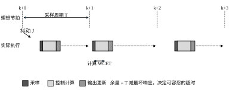
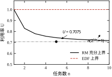
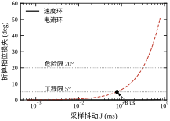
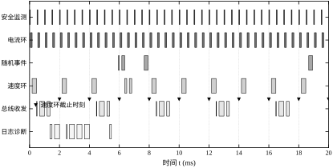
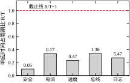
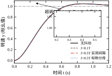
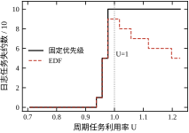
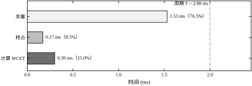
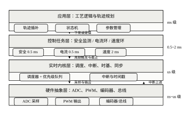
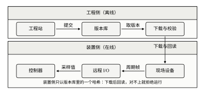

控制工程师习惯把注意力放在算法上：用什么控制器、参数取多少、裕度够不够。但算法最终要变成一段在处理器上按时执行的代码。同一套 PID，写成裸机中断服务程序可以稳定跑十年，塞进一个带文件系统、带网络协议栈、带日志的通用操作系统里，可能每隔几天就抖一次。差别不在公式，在时间。
本章讨论的就是这件事：控制软件如何在确定的时间内完成确定的工作。它不讨论控制器怎么设计（那是第 44、55、58 章的内容），也不讨论计算机控制系统的整体结构（第 84、85 章已经给出分层与信号链），只讨论任务级的时间行为——谁先运行、运行多久、最坏会晚多少、晚了以后性能损失多少。
现象一：每隔几分钟“顿一下”。 某包装线的送料轴，正常运行时跟随平稳，但每隔几分钟出现一次约 2 ms 的滞后，工件上留下一道可见的痕迹。机械间隙、编码器信号、伺服参数都排查过，最后落在软件上：新版本增加了一个 20 ms 周期的诊断日志任务，单次写 Flash 的耗时在坏块整理时从 1.6 ms 涨到 8 ms 以上，把整个系统的利用率推过了 1.0，最低优先级任务开始整拍失约。日志本身与控制无关，但它抢走了 CPU，控制任务在某一拍晚拿到了执行权。
现象二：通信一忙，电机啸叫。 某伺服驱动器的电流环挂在 100 µs 的定时中断上。工程师为了不丢 CAN 帧，把 CAN 接收中断的优先级设得比定时中断高。CAN 总线负载升到 60% 以后，电流环的采样时刻被推迟最多 60 µs，电机出现约 2 kHz 的啸叫。把两个中断的优先级调换、并在 CAN 中断里只做搬运不做解析之后，啸叫消失。
现象三：扫描周期“看起来”是 10 ms。 某小型 PLC 的扫描周期标称 10 ms，工程师在串口中断里做了一段字符串解析，最长耗时 3 ms。用示波器测输出刷新时刻，周期在 7 ms 与 13 ms 之间摆动。PID 的微分项按标称周期做差分，实际间隔却在变，微分增益等效放大了近一倍，阀门动作出现锯齿。
三个现象的共性：代码逻辑没有错，错的是时间。第一个是总负载超了，第二个是优先级排错了，第三个是把“平均周期”当成了“每一拍周期”。
把控制周期想象成一个固定长度的盒子，长度为 T。盒子里要装三样东西：控制算法自身的执行时间 C（最坏执行时间，WCET）；被更高优先级任务与中断抢走的时间 I；以及留给未来的余量 S。三者的关系是
T \ge C + I + S \tag{86-1}
这个不等式看起来平平无奇，但它是整个实时控制软件设计的地基。工程师犯的绝大多数错误，都可以归到“某一项被低估”：C 按平均值估而不是最坏值，I 干脆被忽略，S 被当成“浪费”而压缩到零。三个低估叠加，盒子就装不下，表现为偶发失约——而偶发失约在时域曲线上往往只留下一个不起眼的小台阶，很容易被误判为机械或电磁干扰。
图 86-1 画出了一个控制周期的时序。上排是理想节拍，下排是实际执行：采样时刻被中断延迟推后了一小段（抖动 J），计算占去 C，输出更新之后到下一拍之间是余量。注意实际采样时刻并不是等间隔的，这个不等间隔会在 §86.6 折算成相位损失。

表 86-1 给出本章示例任务集中速度环的实测分解。数字全部来自 §86.12 的仿真：周期 2.00 ms，WCET 0.30 ms，被高优先级任务与随机事件抢占 0.17 ms，最坏响应 0.470 ms，余量 1.530 ms。也就是说，这个回路只用了周期的 23.5%，剩下 76.5% 是安全垫。
| 项目 | 数值/ms | 占周期 | 来源 |
|---|---|---|---|
| 周期 T | 2.00 | 100.0% | 设计取值 |
| 计算 C | 0.30 | 15.0% | 任务定义 |
| 抢占 I | 0.17 | 8.5% | 响应时间减 WCET |
| 最坏响应 R | 0.47 | 23.5% | 响应时间分析 |
| 余量 T-R | 1.53 | 76.5% | 周期减响应 |
这张表要表达的不是“余量很充裕所以可以随便加功能”，而是“余量必须能被算出来”。算不出来的余量等于没有余量：一旦新增任务，I 会变，R 会变，而下一次评审时没人知道还剩多少。
按“错过截止时刻的后果”分，实时任务有三类。
硬实时：错过一次就构成事故。电机电流环错过一拍，可能触发过流保护；安全监测错过一次，急停链路就断了。硬实时任务的判据是“最坏响应时间小于截止时间”，不是“平均响应时间很短”。
固实时：偶尔错过一次可以接受，但错过会导致数据失效。例如 1 ms 周期的编码器采样，偶尔晚 0.2 ms，速度估计的差分误差变大，但系统仍能运行；如果连续错过三拍，估计器就必须复位。
软实时：错过只影响服务质量。日志、诊断、界面刷新属于这一类。软实时任务的价值在于“不打扰硬实时”，它应该被放在最低优先级，并且在过载时第一个被牺牲。
分类的意义在于分配优先级与余量。硬实时任务拿最高优先级和最大的余量，软实时任务拿剩下的。把日志任务设成高优先级，等于让“记录发生过什么”压过“让事情正确发生”。
三个现象都可以用本章的式子反算，反算的过程也说明了这套方法的用途。
现象一的账：日志任务从 1.6 ms 涨到 8.0 ms，周期不变，利用率从 0.7075 涨到 1.0275。过载扫描显示，此时日志任务 10 个作业全部失约（§86.9 表 86-9）。而速度环失约数为 0——它仍然准时，只是“顿一下”来自日志任务占满 CPU 后，控制任务在某一拍被推迟到接近截止。这说明 \lceil R_i/T_j\rceil 这一项不是抽象的：它数的是“这一拍里挤进来几个高优先级作业”。
现象二的账：电流环带宽 2236.1 rad/s，采样被推迟 60 µs。按平均延迟 30 µs 折算，相位损失 3.84^\circ；按最坏 60 µs 折算，7.69^\circ。相对 96.38^\circ 的裕度，这个量不算致命，所以系统没有失稳，只是出现啸叫。啸叫的来源不是相位，而是采样间隔在 100–160 µs 之间摆动，等效采样频率在 6.25–10 kHz 之间变化，让环路的扰动抑制出现了随 CAN 帧周期移动的边带。
现象三的账：扫描周期在 7–13 ms 之间摆动，标称 10 ms。微分项按标称周期算，实际间隔 7 ms 时等效微分增益放大 10/7=1.43 倍，即多 43\%；间隔 13 ms 时缩小到 0.77 倍。增益在 \pm 40\% 范围内随拍跳变，这已经超过多数回路能承受的参数摄动范围。本章 §86.6 的对照实验里，仅把分母从实测改成标称，超调就涨了 10.6\%，而那个实验的抖动只有半个周期。
三次反算用的是同一套式子：式 (86-6) 算负载，式 (86-16) 算相位，式 (86-15) 与微分实现算增益误差。反算的价值在于把“感觉慢了”变成“晚了多少、折多少度、超多少调”，后者才能被验收。
如果只能记住一句话：实时控制软件的验收标准不是“平均算得快”，而是“最坏情况下仍然准时，并且晚了以后知道代价”。
§86.2 把“准时”写成可计算的式子：任务模型、响应时间方程、利用率上界、抖动折算。§86.3 给出六步设计流程，从需求拆到可调度性验证。§86.4 与 §86.5 分别从连续与离散两个视角看时间误差：连续视角给出带宽与延迟的换算，离散视角给出定时器、中断与代码实现的具体约束。§86.6 用实测数据说明抖动到底值多少相位，以及失约与性能的关系。§86.7 逐个参数讲影响方向，§86.8 给调参顺序与经验值，§86.9 讨论 EDF、优先级继承、核间隔离等改进手段。§86.10 是工程落地：WCET 怎么测、预算表怎么填、超差怎么处置。§86.11 说明这套方法的适用边界，§86.12 给出可复现的调度与抖动仿真。
阅读本章需要三个前置概念：采样与零阶保持（第 4、5 章）、相位裕度与截止频率（第 41 章）、离散闭环的稳定性判据（第 38 章）。本章不重复推导这些结论，只把它们换算成时间。
本节把“准时”写成可计算的式子。顺序是：先给任务模型与四个假设，再给响应时间方程（判断可行性），然后用利用率上界给出快速判据，最后把时间误差折算成相位损失（判断性能）。前者回答“跑不跑得动”，后者回答“跑起来以后控制质量掉多少”。
一个周期任务用三元组描述：
\tau_i=(T_i,\;C_i,\;D_i),\qquad i=1,\dots,n \tag{86-2}
其中 T_i 是周期，C_i 是最坏执行时间（WCET），D_i 是相对截止时间，本章取 D_i=T_i（截止等于下一拍释放）。任务在 kT_i 时刻释放，释放后进入就绪队列，由调度器按优先级选择执行。第 k 个作业的响应时间为
R_{i,k}=f_{i,k}-kT_i \tag{86-3}
f_{i,k} 是完成时刻。若存在某个 k 使 R_{i,k}>D_i，称该作业失约。
本章的结论建立在四个假设上，这四条在 §86.9 与 §86.10 会被逐条放松：
现场四条都容易破。破一条，下面的公式就要加修正项；破两条以上，公式只能当量级参考，必须靠实测。
一个作业的响应时间由两部分组成：自己的执行时间，加上被更高优先级任务抢走的时间。高优先级任务在等待期间可能释放多次，释放次数是响应时间的向上取整函数，于是得到递归方程
R_i=C_i+\sum_{j\in \mathrm{hp}(i)}\left\lceil \frac{R_i}{T_j}\right\rceil C_j \tag{86-4}
其中 \mathrm{hp}(i) 是优先级高于 i 的任务集合。方程两边都含 R_i，用不动点迭代求解：从 R_i^{(0)}=C_i 开始，反复代入右端。由于右端关于 R_i 单调不减，迭代序列单调递增且有上界（当 R_i\le T_i 时），因此要么收敛到最小不动点，要么在超过 T_i 后判定不可调度。
用本章任务集算一遍。速度环的 C=0.30，高于它的两个周期任务是 0.5 ms 周期、WCET 分别为 0.05 与 0.12：
R^{(1)}=0.30+\left\lceil \frac{0.30}{0.5}\right\rceil(0.05+0.12)=0.47 \tag{86-5}
再代入一次右端仍得 0.47，收敛。总线收发任务的响应时间是 1.360 ms，日志任务是 5.470 ms，都小于各自的周期（4 ms 与 20 ms）。完整结果见表 86-3。
需要强调：R_i 是最坏响应，不是平均响应。仿真跑 200 ms 得到的平均响应是 0.517 ms，最坏是 1.310 ms，后者比前者大一倍半。设计必须按最坏值算，否则余量会在最不该出现的时候消失。
迭代过程本身也有信息。日志任务的迭代序列是 1.60\to3.13\to3.94\to4.11\to5.13\to5.47，六步收敛；总线任务是 0.55\to1.19\to1.36，三步收敛。序列里的台阶来自 \lceil R/T_j\rceil：当 R 跨过某个高优先级周期的整数倍时，右端会突然多出一整份 C_j，于是响应时间跳一级。日志任务跨过 0.5 ms 周期的次数最多，所以台阶最多；总线任务只跨过三轮，所以很快收敛。
台阶现象解释了一个反直觉的事实：响应时间对参数的敏感度不是线性的。 日志任务从 4.11 跳到 5.13 的那一步，三项取整同时各进一格，多出 0.17+0.30+0.55=1.02 ms，而输入的 C 一点没变。这就是 §86.7.3 所说“高优先级任务 WCET 是全局税”的几何来源：税不是按比例收的，是按“跨没跨过边界”收的。
把所有任务的负载加起来，得到利用率
U=\sum_{i=1}^{n}\frac{C_i}{T_i} \tag{86-6}
本章任务集的周期部分为 0.100+0.240+0.150+0.138+0.080=0.7075（随机事件任务另计）。U 是最快的粗略判据：它小于 1 才有可能调度成功，但小于 1 并不保证成功。
速率单调（RM） 规则是：周期越短，优先级越高。Liu 与 Layland 证明，在固定优先级、D_i=T_i 的条件下，RM 是最优的——若存在某种固定优先级分配可行，则 RM 分配也一定可行。他们还给出了一个充分条件：
U\le n\left(2^{1/n}-1\right) \tag{86-7}
n=1 时上界为 1，n=2 时 0.8284，n=3 时 0.7798，n=5 时 0.7435，n=10 时 0.7177，随 n 增大单调下降并趋于 \ln 2\approx 0.693。本章任务集 U=0.7075<0.7435，满足充分条件，因此一定可调度；这只是“一定行”，不满足时仍可能行，需要用式 (86-4) 逐个验算。
最早截止优先（EDF） 是动态优先级：每次调度选截止时刻最近的就绪作业。在 D_i=T_i 时，EDF 的充要条件是 U\le 1，比 RM 宽松。图 86-3 把两条上界画在一起，本章任务集的位置用圆点标出。

表 86-2 给出两条上界的关键差异。工程上选哪一个，不只看利用率，还要看实现代价：RM 只需静态分配优先级，任何 RTOS 都支持；EDF 需要每个作业维护截止时刻并做动态排序，且过载时的行为不如 RM 可预测——过载时 EDF 会出现“多米诺效应”，一次超时可能导致后续一连串失约。
| 项目 | RM（固定优先级） | EDF（动态优先级） |
|---|---|---|
| 优先级依据 | 周期，静态 | 截止时刻，动态 |
| 可调度充分条件 | U\le n(2^{1/n}-1) | — |
| 可调度充要条件 | 需用式 (86-4) 逐个验算 | U\le 1 |
| n=5 时的上界 | 0.7435 | 1.0000 |
| 过载行为 | 低优先级整拍失约，行为可预测 | 连锁失约，难以预测 |
| 实现代价 | 低，静态优先级即可 | 中，需动态排序与截止时间管理 |
这张表给出的取舍是：硬实时回路优先 RM，因为过载时失约可预测、实现也便宜；只有当 U 已经超过 RM 的 0.7435、又确实需要把 CPU 用满时，才值得付出动态排序与截止时间管理的代价改用 EDF。
理想采样时刻是 kT，实际时刻是
t_k=kT+\delta_k,\qquad 0\le \delta_k\le J \tag{86-8}
J 是抖动上界。\delta_k 使每一拍的控制量晚生效一小段时间，平均延迟为 J/2（均匀分布）。在频域里，纯延迟 \tau 的传递函数是 e^{-s\tau}，在截止频率处的相位为 -\omega_c\tau，因此抖动带来的相位损失为
\Delta\varphi_J\approx \omega_c\frac{J}{2} \tag{86-9}
把本章两个回路代进去。速度环 \omega_c=6.269 rad/s，抖动取半个周期（1.00 ms），\Delta\varphi=6.269\times 0.0005=0.00313 rad =0.18^\circ。电流环 \omega_c=2236.1 rad/s，同样的 1 ms 抖动会给出 64^\circ——回路早已失稳。这就是为什么“抖动占周期的百分比”不是判据：同样是 50%，对慢环无所谓，对快环致命。
反过来解出允许抖动：
J_{\max}=\frac{2\Delta\varphi_{\text{allow}}}{\omega_c} \tag{86-10}
取 \Delta\varphi_{\text{allow}}=5^\circ=0.0873 rad，速度环允许 27.8 ms，电流环只允许 78 µs；取 20^\circ 时分别放大到 111 ms 与 312 µs。图 86-5 把这层关系画成横轴为抖动的直线族，一眼能看出两条回路相差三个数量级。

抖动只是时间误差的一项。完整的等效延迟还包括采样保持本身与计算延迟：
\tau_{\text{eq}}=\frac{T}{2}+d+\frac{J}{2} \tag{86-11}
T/2 来自零阶保持（第 4 章已证明：ZOH 的平均延迟是半个采样周期），d 是从采样到输出更新的计算与传输延迟，J/2 是抖动的平均贡献。把式 (86-11) 代入相位，得到设计必须同时满足的约束组：
\begin{cases} R_i\le T_i, & i=1,\dots,n \\ U\le U_{\text{bound}} \\ \omega_c\left(\dfrac{T}{2}+d+\dfrac{J}{2}\right)\le \Delta\varphi_{\text{allow}} \end{cases} \tag{86-12}
三组约束分别对应三类失败：算不完（失约）、总体超载（调度不可行）、算完了但控制质量不够（相位不足）。工程上最常见的错误是只检查第一组，把后两组留给“调试时再说”。
以速度环为例：T=2 ms，d=0.3T=0.6 ms，J=1 ms，\tau_{\text{eq}}=1.0+0.6+0.5=2.1 ms，\Delta\varphi=6.269\times0.0021=0.0132 rad =0.75^\circ。电流环取 T=62.5 µs、d=0.3T、J=0.5T，则 \tau_{\text{eq}}=31.25+18.75+15.6=65.6 µs，\Delta\varphi=2236.1\times6.56\times10^{-5}=0.147 rad =8.4^\circ。同一个设计流程，慢环几乎不设防，快环必须精打细算。
以上公式干净，是因为假设干净。三处最常见的失真需要提前说明。
第一，WCET 不是常数。缓存命中率、分支预测、Flash 等待周期、总线仲裁都会让它随上下文变化。同一段代码在冷缓存下的执行时间可能是热缓存的 3 倍以上。式 (86-4) 里的 C_i 应取“可复现的最坏值”，而不是“测到的最大值”。
第二，中断不服从任务模型。中断服务程序（ISR）通常不参与优先级调度，它在任何时刻都能打断任务，包括正在执行临界区的任务。ISR 的执行时间必须计入 I，或者把 ISR 折算成一个周期极短、优先级最高的任务。
第三，阻塞没有出现在式 (86-4) 里。一旦任务间共享互斥量，低优先级任务持锁会阻塞高优先级任务，这就是优先级反转。修正办法是在响应时间方程里加一项阻塞时间 B_i，具体在 §86.9 讨论。
这三点决定了：公式用来做设计前的可行性判断，实测用来做投运前的验收。两者缺一不可。
U 是全书出现频率最高的数字，也是最容易被误用的数字。三个陷阱要分别说清。
陷阱一：把充分条件当必要条件。 U\le n(2^{1/n}-1) 只能证明“一定可行”，不能证明“一定不可行”。把速度环周期减半后 U=0.8575，已经超过 n=5 的上界 0.7435，但逐项验算仍然全部通过：速度环 0.470 ms、总线 1.830 ms、日志 7.820 ms，都小于各自的周期。此时系统可行，只是失去了“不用算就能保证”的便利。反过来，看到 U 超上界就宣布不可行，是常见的误判。
陷阱二：聚合口径不一致，漏算一大块负载。 本章的电流环本体是 16 kHz 的 ISR，每拍 15 µs，占 CPU 的 24\%。任务表里没有这一项，因为它不在任务队列里。若因此认为“U 只算任务”，就会漏掉近四分之一的负载。
正确的做法是聚合建模：把 0.5 ms 内的 8 次 ISR 合成一个作业，8\times15=120 µs，恰好等于表 86-3 中“电流环保护”的 WCET 0.12 ms。所以那张表的 U=0.7075 已经包含了电流环的负载，没有漏算。这个巧合不是巧合，而是周期取 0.5 ms 的整数分频带来的必然结果——聚合周期是 ISR 周期的整数倍时，聚合负载严格等于原负载。
陷阱三：U 不含阻塞与非周期负载。 式 (86-6) 只统计周期任务的 C_i/T_i。随机事件任务按平均间隔 8 ms、每次 0.25 ms 计，额外贡献约 3.1\%；若有临界区阻塞，还要加上 B_i/T_i。本章的真实负载约 0.739，而不是表面上的 0.7075。
三个陷阱的共同点是：U 是一个“算法简单、口径复杂”的量。算它只要一行加法，定义它的边界却要想清楚——哪些算、哪些不算、按什么周期聚合。口径写不清的 U，比没有 U 更危险。
式 (86-4) 与式 (86-19) 在纸面上很干净，落到具体任务集上会遇到四种边界情形。它们不影响公式的正确性，却直接影响“算出来的结论能不能用”。
边界一：等号成立不算通过。 判据写的是 R_i\le D_i，数学上等号可以通过。但 R_i=D_i 意味着这个任务每一拍都用满整个周期，任何一次额外的中断延迟、任何一次缓存失效，都会立刻变成失约。工程上要求留出余量，经验值是 10\% 以上。本章任务集的余量都很宽：电流环 0.17/0.5，余 66\%；速度环 0.470/2.0，余 76.5\%；日志 5.470/20.0，余 72.65\%。反倒是最“不重要”的日志任务余量不小，因为它周期长。
边界二：R_i>T_i 的物理含义。 式 (86-4) 在迭代中一旦发现 R>T 就返回无穷大，这只是数学上的终止条件。物理上发生的事是队列积压：这个任务每一拍都比上一拍晚一点开始，未完成的作业越堆越多。若整体 U<1，积压不会无限增长，表现为“偶发丢一拍”；若 U>1，积压线性增长，最终必然崩溃。所以看到 R>T，第一步不是调这个任务的参数，而是先看 U——U>1 是总量问题，U<1 才是分配问题。
边界三：优先级必须唯一。 响应时间分析假设任意两个任务的优先级可比。若两个任务被配成同一优先级（不少 RTOS 允许这样，按时间片轮转），抢占关系就变成“谁先到谁先跑”，式 (86-4) 不再适用。保守的处理是把这两个任务合并成一个，C 取两者之和，T 取较小者，再按合并后的任务参与分析。合并会高估负载，但结论一定安全。反过来说，如果设计里出现了同优先级，说明任务划分本身还没做完。
边界四：同时释放的那一拍最坏。 本章六个任务的周期都是 0.5 ms 的整数倍，因此每个超周期起点上它们同时释放。这一拍里，日志任务要等前面五个任务全部执行完才能开始：0.05+0.12+0.25+0.30+0.55=1.27 ms。而它的平均等待远小于这个值。图 86-2 的甘特图第一列就是这种“齐步走”的形态。
这个现象给出一个不花钱的优化手段：给任务加相位偏移。把总线收发任务的相位从 0 改成 1 ms，它就不再与速度环挤在同一拍；把日志任务的相位改成 7 ms，它就落在电流环的空档里。相位偏移不改变任何任务的周期与 WCET，也不改变 U，却能把最坏响应时间削下一截。代价是分析变复杂——带偏移的分析要检查所有临界瞬间，而不只是一个超周期起点。所以实践中通常只在“某一拍明显偏长”时才用，不作为默认手段。
四种边界情形合起来说明一件事：判据是必要工具，不是充分答案。真正决定系统能不能用的，是判据之外的余量、口径与相位安排。
本章的分析会产出四层数字：任务层的响应时间、拍层的时间戳、控制层的相位、性能层的超调。它们各自的来源不同、精度不同，但描述的是同一个系统的同一个毛病。工程上最有用的技巧，是把四层数字互相对账——任何两层矛盾，都说明某条假设被破坏了。
以本章速度环为例，四层的典型值分别是：任务层 R=0.470 ms，来自式 (86-4) 的不动点迭代；拍层实测间隔 1.9–2.1 ms，来自采样时间戳序列；控制层相位损失 0.359^\circ，来自式 (86-15)；性能层超调 4.663\%，来自闭环阶跃仿真。
正常情形下，四层是自洽的：任务层给出 R，减去 C 得到被抢占的时间；拍层验证这个时间确实出现在时间戳里；控制层把拍层的抖动折算成相位；性能层确认这点相位对应这么点超调。
对账能查出三类问题。
第一类：任务层通过，性能层不合格。 响应时间全部在截止以内，超调却明显偏高。这时问题几乎一定在实现而不在时间：微分分母用了标称值、离散化多了一拍、输出更新滞后。诊断方法是 §86.8.5 的第一条——把抖动关掉重测，症状若不变，就与时间无关。
第二类：性能层正常，任务层超期。 波形看着很好，日志却报出超期计数。这种情况通常说明测量点打错了位置：时间戳打在函数入口而不是采样时刻，或者把被抢占的时间算进了自己的 C。诊断方法是把时间戳前移到中断入口，重新统计一次直方图，看超期是否消失。
第三类：拍层均值正确，极差很大。 平均间隔 2.000 ms，极差却有 0.4 ms。均值正确说明计时基准没问题，极差大说明有周期性抢占或总线阻塞。这类问题在任务层看不见（R 只给最坏值），在性能层也看不见（平均相位损失没变），只能在拍层的直方图里发现。诊断方法是对抖动序列做 FFT，找与总线、通信、DMA 同频的成分。
三类问题的共同点是：单看一层永远查不出来。任务层给的是上界，拍层给的是分布，控制层给的是折算，性能层给的是结果。上界合格不代表分布好看，分布好看不代表结果合格。四层都在，才能互相印证。
这也是本章把仿真与测量分开写的原因。仿真给任务层与控制层，测量给拍层与性能层；两者对不上时，先怀疑模型，再怀疑代码。若模型与代码都没问题，那就是有一层数字被读错了——而对账的过程，本身就是把读数重新校准一遍的过程。
§86.2 给了判据，本节给流程。流程的目标不是“设计出一个能跑的软件”，而是“设计出一个能在评审会上说清楚余量在哪里的软件”。共六步，前两步定义问题，中间两步量化，最后两步验证与留档。
控制器设计给出的是截止频率 \omega_c、相位裕度 PM、采样周期上限。软件设计需要的是另一组量：每个任务的周期 T_i、截止 D_i、允许抖动 J_i、允许计算延迟 d_i。翻译关系就是式 (86-9) 与式 (86-11)：
J_i\le \frac{2\left(\Delta\varphi_{\text{allow}}-PM_{\text{loss}}\right)}{\omega_{c,i}},\qquad d_i\le \frac{\Delta\varphi_{\text{allow}}}{\omega_{c,i}}-\frac{T_i}{2} \tag{86-13}
以本章速度环为例，\omega_c=6.269 rad/s、PM=66.89^\circ，若允许再损失 5^\circ，则抖动上界 27.8 ms、计算延迟上界 13.9 ms 减去 1 ms，约 12.9 ms。这两个数字远超实际可能，说明速度环的时间指标很宽松，软件上几乎不会被时间问题卡住。
电流环就完全不同：\omega_c=2236.1 rad/s，同样允许 5^\circ，抖动上界只有 78 µs，计算延迟上界 39 µs 减半个周期（31 µs），只剩 8 µs 出头。这意味着电流环的采样、计算、输出必须在一个极短的时间窗内完成，任何一次内存缺页、Flash 等待、总线仲裁都会吃掉这份预算。
这一步最容易犯的错，是把所有回路按同一个标准对待。 慢环按快环的预算设计，浪费算力；快环按慢环的预算设计，现场出问题。正确做法是先算每个回路的 \omega_c，再分别定预算。
任务划分有两个极端。分得太细，任务切换开销与共享数据同步成本上升；分得太粗，一个任务里做了三件不同频率的事，周期只能按最快的定，浪费算力。
工程上按“频率 + 关键性”两个维度划分：
本章示例任务集共六个任务：安全监测（0.5 ms，硬实时）、电流环保护（0.5 ms，硬实时）、随机事件处理（非周期，固实时）、速度环（2 ms，硬实时）、总线收发（4 ms，固实时）、日志诊断（20 ms，软实时）。六个任务的划分依据不是功能模块，而是时间尺度与失效后果。
需要单独说明：电流环本体的采样率是 62.5 µs（16 kHz），它由硬件定时器直接触发 ADC 与中断，不经过 RTOS 的任务队列，因此不出现在上表的任务集中。它的执行时间只有十几微秒量级，时间行为的分析方法与任务完全相同，但周期取 62.5 µs。后文凡涉及电流环带宽的例子，指的都是这个 62.5 µs 的中断服务程序；涉及调度表的例子，指的是 0.5 ms 的电流环保护任务。
周期的选择遵循三条经验：
三条之间会冲突。例如电流环按第 1 条可取 89 µs，但按第 2 条必须取 0.5 ms 的整数分之一，于是落到 62.5 µs。冲突时以第 2 条为准，第 1 条留出的余量正是用来吸收这种取整的。
WCET 必须实测，不能靠代码行数估。测量方法在 §86.10 详述，这里只强调三条纪律：测最坏路径而不是平均路径；测冷缓存与热缓存两种状态；测中断同时发生的最坏叠加。
测完之后填表。表 86-3 是本章任务集的完整结果，R_i 由式 (86-4) 迭代得到，R_i/T_i 是判断可行性的直接指标。
| 任务 | 周期 T_i/ms | WCET C_i/ms | 优先级 | R_i/ms | R_i/T_i | 类型 |
|---|---|---|---|---|---|---|
| 安全监测 | 0.5 | 0.05 | 1 | 0.050 | 0.100 | 硬实时 |
| 电流环保护 | 0.5 | 0.12 | 2 | 0.170 | 0.340 | 硬实时 |
| 随机事件 | 均值间隔 8.0 | 0.25 | 3 | 0.575 | — | 固实时 |
| 速度环 | 2.0 | 0.30 | 4 | 0.470 | 0.235 | 硬实时 |
| 总线收发 | 4.0 | 0.55 | 5 | 1.360 | 0.340 | 固实时 |
| 日志诊断 | 20.0 | 1.60 | 6 | 5.470 | 0.274 | 软实时 |
表中 R_i/T_i 全部小于 0.34，最紧的是电流环与总线收发（0.340）。这两个数字说明系统有较大余量，但也提示：电流环的余量看起来是 0.66 个周期，其实不能这么理解——R_i 是响应时间，不是执行时间，电流环真正占用的 CPU 只有 0.12/0.5=24\%。判断“还能不能加功能”，看利用率而不是看响应时间。
优先级分配有三条规则，按优先级从高到低依次适用：
分配完必须回头看利用率。本章 U=0.7075，低于 n=5 的 RM 上界 0.7435，因此按 RM 分配一定可行。如果 U 落在 0.7435 与 1.0 之间，RM 上界不再保证，必须用式 (86-4) 逐个验算；验算通过就可行，验算不通过再考虑 EDF 或降低负载。
验证分三层，缺一层都不算完成。
第一层是解析验证：用式 (86-4) 算出所有任务的 R_i，与 T_i 比较。这一层在纸面上完成，五分钟能做完，但它只能证明“在假设成立时可行”。
第二层是调度仿真：按任务集生成作业序列，用固定优先级或 EDF 逐拍模拟，统计失约数、最大响应、响应抖动。图 86-2 是一次 20 ms 窗口的仿真结果：六个任务按优先级排开，电流环每 0.5 ms 出现一次，速度环每 2 ms 出现一次，随机事件在 4 ms 附近插入并把速度环推迟了一段。这张图的价值在于把“抢占”这件事画出来——响应时间方程里的 \lceil R_i/T_j\rceil 项，在图上就是那些插进来的小方块。

第三层是实测验证：在目标硬件上跑真实负载，用 GPIO 翻转或周期计数器记录每拍的实际执行时间，统计最大值、99.9 分位与抖动。仿真里 C_i 是常数，实测里 C_i 是分布，两者的差值就是缓存与总线带来的不确定性。
留档的内容包括：任务表（周期、WCET、优先级、截止）、响应时间计算结果、仿真脚本与结果、实测直方图、余量汇总。这份档案在下次加功能时是唯一的比较基准；没有它，“还剩多少余量”就只能靠猜。
偏差一：先写代码，后补调度分析。 代码写完再算响应时间，往往发现某一环超了，只能回头改架构。正确的顺序是先定任务与周期，再写代码，最后用实测替换估计值。
偏差二：把仿真当成验证终点。 仿真用的是常数 WCET 与理想中断，实测会遇到缓存争用、DMA 抢占总线、看门狗复位。仿真通过只说明设计思路对，不说明现场能跑。
速度环的例子说明流程怎么走，电流环的例子说明流程在“极短周期”下会卡在哪一步。仍按六步来。
第一步，翻译指标。 电流环 \omega_c=2236.1 rad/s，PM=96.38^\circ。若只允许再损失 5^\circ，抖动上界是 78 µs，计算延迟上界是 39 µs。这两个数字比速度环小三个数量级，因为分母多了一个 \omega_c。
第二步，划分任务。 电流环本体不进任务队列，它是硬件定时器触发的 ISR。这一条很重要：ISR 没有“就绪队列等待”，延迟只来自中断响应与更高优先级 ISR 的嵌套。
第三步，分配周期。 T\le0.1/\omega_c=44.7 µs 对应 2.9^\circ 损失，T\le0.2/\omega_c=89.4 µs 对应 5.7^\circ。取 62.5 µs（16 kHz），落在两者之间，既满足相位要求，又能被 0.5 ms 的主时基整除（8 分频）。
第四步，测 WCET 并填预算。 实测 ISR 执行 15 µs，占周期的 24\%。剩下的 47.5 µs 要分给 ADC 采样建立、PWM 死区更新与函数调用开销，逐项实测后余量约 38.5 µs。
第五步，分配优先级。 电流环 ISR 高于所有任务，但低于故障保护 ISR。故障保护的执行时间只有几微秒，却必须无条件抢占电流环——过流时晚一个周期关断，功率器件就可能损坏。
第六步，验证。 响应时间 R=15 µs（无更高优先级 ISR 时），R/T=0.24；相位裕度经零阶保持折算损失 4.00^\circ、计算延迟损失 1.92^\circ、抖动（实测 10 µs，取一半）损失 0.64^\circ，合计 6.56^\circ，折算后 PM=89.81^\circ（见表 86-4）。
六步走完会发现，电流环的难点集中在第四步与第五步。周期、优先级都是设计时能定的，WCET 与中断嵌套却要在真实硬件上测。若测得 ISR 执行 25 µs 而不是 15 µs，占周期就从 24\% 升到 40\%，余量只剩 37.5 µs，其中还要容纳突发中断。这时优化方向不是“再挤一点余量”，而是查这 10 µs 花在哪——多半是浮点运算或未加 static 的局部变量反复初始化。
六步是设计流程，从指标到代码。真实工作里更常见的是反过来：接手一套没有文档的旧程序，需要判断它当初是怎么设计的、余量在哪里、能不能加功能。这时六步可以倒着走，用测量代替文档。
倒推第一步：测周期。 在任务入口打时间戳，跑一分钟，看相邻两次的间隔。稳定在 2.000 ms 的是周期任务；间隔服从指数分布的是事件任务；两者都不像的，说明用了相对延时，周期正在漂移。这一步能直接得到 T_i。
倒推第二步：测 WCET。 同一批时间戳，取“进入任务到写完输出”这一段的最大值，得到 C_i 的近似。注意是近似：这样测到的是“这一分钟里出现过的最坏值”，不是真上界。要用它做判据，得再加 10\% 余量。
倒推第三步：推测优先级。 不看代码，只看抢占关系。给高优先级任务人为加长执行时间（在调试版本里插空转），观察哪些任务的响应时间跟着变长——跟着变长的都是低优先级。逐个做一遍，就能排出完整的优先级顺序。
倒推第四步：反算利用率与余量。 有了 T_i、C_i、优先级，式 (86-4) 与式 (86-6) 都能算。算出来的 R_i 与实测的响应时间对照，若两者接近，说明原设计是按这套模型做的；若差得远，说明原设计没做分析，或者有未建模的阻塞。
这套反推有三个典型发现，每一个都对应一种设计风格。
发现一：所有任务的 R/T 都接近同一个值。 这是按速率单调（RM）分配优先级的特征——周期越短优先级越高，于是各任务的 R/T 被压得比较均匀。看到这个形态，可以放心地按 RM 继续加任务。
发现二：某个任务的 R/T 特别小。 例如安全监测 0.10，其余都在 0.23 以上。这说明它被额外保护了，优先级高于 RM 的要求，或者它的截止时间被单独收紧过。这个任务不能动，动它等于拆掉一道保险。
发现三：某个任务的 R/T 超过 0.9。 它已经在失约边缘，而现场没报故障，说明实际负载比表里的小，或者它偶尔丢拍但没人注意。这一类任务加功能时最先崩，应当列为改造重点。
倒推的价值在于：它把“读代码猜设计”变成了“测行为推设计”。代码可以写得晦涩，行为不会撒谎。本章的六步与这套倒推是同一套模型的两种用法——正着用是设计，倒着用是审计。两者都掌握，才算真正会用这张任务表。
§86.1 至 §86.3 讨论的都是“某一拍能不能按时完成”。还有一种更早、更粗的视角：把整条数字控制回路当成一个带纯延迟的连续系统，直接看延迟吃掉了多少相位裕度。这个视角不关心任务、优先级与截止时间，只关心一个量——从“应当采样”到“实际输出”之间隔了多久。
DAC 或 PWM 在两次更新之间保持上一个值，这个行为在频域里是零阶保持器。它的频率响应为
H_{\text{zoh}}(j\omega)=\frac{1-e^{-j\omega T}}{j\omega T} =e^{-j\omega T/2}\cdot\frac{\sin(\omega T/2)}{\omega T/2} \tag{86-14}
幅值项在 \omega T\ll1 时接近 1，相位项则精确等于 -\omega T/2。也就是说，零阶保持可以等效成“纯延迟半个采样周期”。速度环 T=2 ms，T/2=1 ms，在 \omega_c=6.269 rad/s 处贡献
\Delta\varphi_{\text{zoh}}=\frac{\omega_cT}{2} =6.269\times10^{-3}\ \text{rad}=0.359^\circ \tag{86-15}
电流环 T=62.5 µs，T/2=31.25 µs，在 \omega_c=2236.1 rad/s 处贡献 4.00^\circ。同一个“半个周期”，慢回路只损失零点几度，快回路损失四度。差别不在时间上，而在 \omega_c 上：相位是时间乘以频率。
计算延迟 d 是“采样完成”到“输出更新”之间的固定间隔；抖动 J 是实际采样时刻围绕理想时刻的随机偏移，它让每拍的延迟在 0 到 J 之间摆动，平均多出 J/2。三者串联，可以合并成一个等效延迟
\tau_{\text{eq}}=\frac{T}{2}+d+\frac{J}{2} \tag{86-16}
对应的相位损失就是 \omega_c\tau_{\text{eq}}。这个式子的价值在于：软件侧三个来源不同、单位相同的量被加成一个数，交给控制器设计者去核对相位裕度。表 86-4 是本章两个回路的分项账。
| 回路 | T | 保持 T/2 | 计算 d | 抖动 J/2 | \tau_{\text{eq}} | 相位损失 | 原 PM | 折算 PM |
|---|---|---|---|---|---|---|---|---|
| 速度环 | 2 ms | 1 ms / 0.359^\circ | 0.6 ms / 0.216^\circ | 0.3 ms / 0.108^\circ | 1.9 ms | 0.683^\circ | 66.89^\circ | 66.21^\circ |
| 电流环 | 62.5 µs | 31.25 µs / 4.00^\circ | 15 µs / 1.92^\circ | 5 µs / 0.64^\circ | 51.25 µs | 6.57^\circ | 96.38^\circ | 89.81^\circ |
速度环总损失 0.683^\circ，相对 66.89^\circ 的裕度可以忽略；电流环损失 6.57^\circ，把 96.38^\circ 拉到 89.81^\circ，仍然充裕。这里的结论不是“时间问题不重要”，而是“这两个回路的周期选得足够短，时间误差还没有成为主导项”。
反过来算一次更有说服力。若把电流环周期从 62.5 µs 放宽到 250 µs（4 kHz），保持项变为 125 µs，贡献 16.02^\circ；计算按比例涨到 60 µs，贡献 7.69^\circ；抖动 20 µs，贡献 2.56^\circ。三项合计 26.26^\circ，PM 从 96.38^\circ 降到 70.12^\circ。周期只放大四倍，相位损失涨了近四倍——因为保持项与计算项都随周期线性变大，而相位是时间乘频率，两者相乘后成了平方关系。
把同一份抖动加到两个回路上，结果完全不同。取 J=50 µs，按平均延迟 J/2=25 µs 计入：速度环损失 6.269\times2.5\times10^{-5}=1.57\times10^{-4} rad，即 0.009^\circ；电流环损失 2236.1\times2.5\times10^{-5}=0.056 rad，即 3.20^\circ。同一份抖动，折算到两个回路的相位损失相差 356 倍，这个倍数正是两个截止频率之比。
§86.2 的图 86-5 把这条关系画成两条直线，斜率就是各自的 \omega_c。图上的 5^\circ 工程限与电流环交在约 78 µs，与速度环交在约 27.8 ms；20^\circ 危险线与电流环交在约 312 µs。读这张图的方法是先找自己的回路曲线，再向右看“当前的抖动落在哪一段”。对速度环，只要抖动不超过毫秒级，这条线永远碰不到；对电流环，几十微秒的抖动就已经进入需要解释的区间。
还有一层影响不体现在相位上：微分项用相邻两拍之差近似导数，抖动会让这个差值的噪声被放大。名义上 \dot{y}\approx(y_k-y_{k-1})/T，若 T 是标称值而实际间隔在抖，等效的微分增益就随拍变化。仿真里这一项的破坏力比抖动本身还大一个数量级，具体数字放在 §86.6 讨论。
式 (86-14) 的幅值项做了 \sin x/x\approx1 的近似，误差量级为
\frac{\sin(\omega T/2)}{\omega T/2}\approx1-\frac{(\omega T)^2}{24} \tag{86-17}
电流环 \omega_cT=0.1398，误差约 0.08\%；速度环 \omega_cT=0.0125，误差可以忽略。工程上把 \omega_cT\le0.5 当作这条近似可用的界线，此时相位误差不到 2\%。若某个回路的 \omega_cT 超过 1，就不能再用“半个周期延迟”这个说法，必须回到 z 域精确计算。
连续视角还有三件事看不见。第一，它看不见截止时间：一个任务的平均延迟合格，某一拍却可能晚了三倍。第二，它看不见优先级：延迟是“平均摊派”的，而实际延迟由调度决定，高优先级任务从不迟到，低优先级任务可能连续被推。第三，它看不见失约的分布：过载时系统不是均匀变慢，而是先丢某一类作业。这三件事都要靠 §86.5 的离散视角补上。
一句话概括本节：连续视角回答“会不会振”，离散视角回答“会不会误拍”。前者给预算，后者给保证，两者都不能省。
前面几节都是“给定抖动，算相位损失”。工程上更常用的是反方向：给定允许的相位损失，反推这个回路能容忍多大的抖动。把式 (86-15) 的相位项反过来解，取平均延迟 J/2，得
J_{\max}=\frac{2\varphi_{\max}}{28.65\,\omega_c}=\frac{\varphi_{\max}}{14.325\,\omega_c}. \tag{86-18}
式中 J_{\max} 与 \varphi_{\max} 分别以秒与度为单位。这条式子把“相位”这个控制语言翻译成“微秒”这个实现语言，一张表就能看清各环的处境。
取相位预算 \varphi_{\max}=2.5^\circ（约为 66.89^\circ 裕度的二十七分之一），两个回路的答案差别极大：
这两个数与 §86.7.7 给出的允许值完全一致，而它们的含义截然不同。速度环的 27.8 ms 意味着“抖动几乎不可能成为约束”——哪怕中断延迟到了毫秒级，相位损失仍不到 2.5^\circ。电流环的 78 µs 意味着“抖动预算是硬约束”——一次总线仲裁、一次 Flash 等待，就可能吃掉一半。
反推的用处有三层。
第一层，判断要不要优化。把实测抖动除以 J_{\max}，得到占用率。本章速度环 0.84/27.8=3\%，电流环 10/78=13\%，两者都在安全区，说明当前的硬件配置够用，不必为抖动换器件。若某个回路占到 50\% 以上，才值得投入。
第二层，判断瓶颈在哪。若速度环的占用率也上到 50\%，而它的 \omega_c 只有 6.3 rad/s，那就说明抖动已经大到毫秒量级，问题一定出在调度而不在硬件——先查优先级与阻塞，而不是换晶振。
第三层，给新回路定预算。若将来加一个位置环，\omega_c 取 60 rad/s，用同一条式子得 J_{\max}=2.9 ms。这个数字可以直接写进设计约束，不需要重新推导。
式 (86-18) 还有一个容易被忽略的性质：J_{\max} 与 \omega_c 成反比。带宽提一倍，允许抖动减一半。这意味着“提高带宽”这个看似纯粹的控制决策，会同时收紧实时约束。设计时若把速度环带宽从 6.3 rad/s 提到 12.6 rad/s，允许抖动从 27.8 ms 掉到 13.9 ms，原本“无论如何都够用”的结论就不再成立了。带宽与控制周期的关系，从来不是两个独立的旋钮。
前面所有延迟都发生在反馈通道：采样晚了一点、计算晚了一点、输出晚了一点。它们都在闭环之内，所以吃相位裕度。还有一类延迟发生在参考通道——指令从总线传进来、从轨迹规划器算出来，它不进闭环，因此不吃裕度，但会造成跟踪滞后。两者不能用同一个预算，混淆会同时导致过度设计与精度不达标。
先看数字。本章总线收发任务周期 4 ms，一帧传输约 0.5 ms，因此一条新指令从“上位机发出”到“进入控制器”最坏滞后 4.5 ms。若把它当作反馈延迟代入式 (86-15)，速度环损失 6.269\times4.5\times10^{-3}=0.028 rad，即 1.6^\circ；这个数很小，小到容易被当成“可以忽略”。但把它当成零，同样是错的——它不体现在裕度上，而体现在跟踪误差上。
对匀速指令，稳态跟踪滞后等于延迟乘以速度。取 v=100 mm/s，4.5 ms 的参考延迟对应 0.45 mm 的固定滞后。这个误差不会随时间衰减，也不会被积分项消除——积分项消除的是常值误差，而这里是“指令在动、输出追不上”，属于速度型误差。定位精度要求 0.1 mm 的场合，这 0.45 mm 直接不达标。
处理这类延迟有三条路，与处理反馈延迟完全不同。
第一条，提高指令更新率。 把总线周期从 4 ms 缩到 1 ms，滞后降到 1.5 ms，误差降到 0.15 mm。这条路的代价是总线负载与通信任务 WCET 上升，属于 §86.7.8 说的“联动变更”，要整体重算。
第二条，加前馈。 既然指令是可预知的，就把指令的一阶、二阶差分作为前馈项直接加到输出上，让执行器“提前动”。前馈不经过反馈环，因此不受稳定性约束，能把跟踪误差压到接近零。代价是前馈增益依赖对象参数的准确性，参数失配时会引入新的误差。
第三条，指令平滑。 把阶跃指令改成一阶或二阶滤波后的斜坡，让指令本身的变化率受限。这条路不减少延迟，但把“追不上”变成“追得上”，副作用是响应变慢。
三条路的共同点是：它们都不改变相位裕度。这一点常被误判——有人算出参考延迟 1.6^\circ，就把它从 66.89^\circ 的裕度里扣掉，得出 65.29^\circ，然后据此放慢带宽。这是把两类延迟混为一谈。正确的口径是：反馈延迟进裕度预算，参考延迟进跟踪误差预算，两本账分开记。
对高带宽的位置环，这个区分更重要。位置环 \omega_c 取 60 rad/s，4.5 ms 的延迟若被误当成反馈延迟，折算出来是 15.5^\circ，足以让人做出“必须降低带宽”的错误决策；而实际上它只是 0.45 mm 的跟踪滞后，用前馈就能解决。同一份延迟，记错账的代价是牺牲了整个环的动态性能。
连续视角把延迟摊成平均值，离散视角必须回答“具体哪一拍”的问题。控制器在软件里是一段以固定节拍运行的代码，采样只在节拍边界发生，输出只在节拍边界更新，延迟不是连续量，而是整数倍的节拍。本节讨论这种离散化给时间分析带来的三处变化：延迟的归属、抖动的形态、判据的形式。
一个 2 ms 周期的速度环，在 1 s 内只有 500 个决策时刻。若控制量在 t=2.000 ms 算出、t=2.001 ms 才写入 PWM，这 1 µs 的差别在连续模型里是 0.0006^\circ 的相位，在离散模型里却可能整整晚一拍——如果 PWM 的更新窗口在 2.000 ms 关闭，输出就要等到 4.000 ms。离散系统的分辨率是节拍，不是微秒。
这件事的直接后果是：同一个平均延迟，量化后的效果可能差一倍。 平均延迟 0.3 ms、节拍 0.5 ms，量化后有时 0 拍、有时 1 拍；平均看起来是 0.6 拍，实际每一拍非 0 即 1。对控制器而言，这不叫“平均延迟 0.3 ms”，而叫“延迟在 0 与 0.5 ms 之间跳变”，后者才是它真正感受到的扰动。
连续控制器 C(s) 要变成代码，有三条常见路径，它们对延迟的记账完全不同。
路径一：直接差分实现。 把 s 换成 (1-z^{-1})/T，写成 u_k=u_{k-1}+K_p(e_k-e_{k-1})+\cdots 的形式。这种实现里 u_k 只用到当前拍与上一拍的量，没有额外状态延迟。
路径二：先离散成状态空间，再迭代。 用零阶保持把 C(s) 转成 (A_c,B_c,C_c,D_c)，代码按 x_{k+1}=A_cx_k+B_ce_k、u_k=C_cx_k 执行。由于 D_c=0，u_k 只依赖 x_k，而 x_k 由 e_{k-1} 算出，等效多了一拍延迟。
路径三：先离散成 z 域传递函数，再用直接型实现。 延迟取决于实现结构，也与 b_0 是否为零有关。判断方法很朴素：逐行看代码，确认 u_k 到底依赖哪一拍的 e。
三条路径的差别不是学术问题。同一个速度环、同样 T=2 ms，路径一在仿真里的超调是 4.660\%，路径二（按 ZOH 状态空间实现）是 9.913\%，调节时间从 1.200 s 变成 0.986 s。超调翻了一倍多，原因只是少写了一拍。工程上判断“我的实现属于哪条路径”，比争论“离散化误差有多大”更有用。
式 (86-15) 的预测在 z 域能直接验证。把开环 L(s)=C(s)G(s) 按零阶保持离散，用离散系统的相位裕度定义重算，得到表 86-5。
| 采样周期 T | 式 (86-15) 预测损失 | 离散实测 PM | 与连续值之差 |
|---|---|---|---|
| 0.5 ms | 0.090^\circ | 66.80^\circ | 0.09^\circ |
| 1.0 ms | 0.180^\circ | 66.71^\circ | 0.18^\circ |
| 2.0 ms | 0.359^\circ | 66.53^\circ | 0.36^\circ |
| 4.0 ms | 0.718^\circ | 66.17^\circ | 0.72^\circ |
| 8.0 ms | 1.437^\circ | 65.45^\circ | 1.44^\circ |
五行的偏差都在 0.01^\circ 以内，说明“半个周期延迟”这个说法在 \omega_cT\le0.5 的范围内足够准。这张表还有一个用法：它告诉你采样周期每翻一倍，相位裕度损失也翻一倍。若某个回路只剩 5^\circ 余量，T 就没有翻倍的余地。
需要注意的是，表 86-5 的“实测”仍来自传递函数离散化，不是逐拍代码仿真。两者在第 86 章的仿真里会对得上，但前提是代码实现没有额外引入延迟——这正是 §86.5.2 强调的那件事。
连续模型里抖动是一个标量 J。到了离散域，它分裂成三个不同的量：
三者的合成延迟是 d_q+J_o，而 J_s 通过差分项起作用。工程上常见的错误是把三者合成一个 J 丢进式 (86-16)，结果既高估了相位损失，又漏掉了差分噪声。正确的做法是分开测量：J_s 用输入捕获测，J_o 用 GPIO 翻转测，d_q 用周期计数器测。
对本章速度环，仿真得到的响应抖动约 0.84 ms（占周期 42\%），J_o 约 0.1 ms，d_q 为 1 拍（0.5 ms 节拍下的 0.6 ms 计算）。若把 0.84 ms 当作 J 代入式 (86-16)，平均延迟增加 0.42 ms，相位损失 0.15^\circ；若只用 J_o=0.1 ms，平均延迟增加 0.05 ms，损失 0.02^\circ。两个数相差近八倍，但它们影响的机制不同，不能互相替代。
连续视角的合格判据是相位裕度为正，离散视角的合格判据是每个作业的响应时间不超过截止时间：
R_i\le D_i,\qquad i=1,2,\ldots,n \tag{86-19}
这两个判据不等价。相位裕度合格只说明平均意义上的闭环稳定，R_i\le D_i 合格才说明没有任何一拍被漏掉。图 86-4 把本章五个周期任务的 R_i/T_i 画成柱状，柱顶离 1 的距离就是各任务的余量。

图上最高的是电流环保护与总线收发，都是 0.340；最低的是安全监测，0.100。这个排序与优先级顺序一致——高优先级任务的响应时间几乎等于它自己的执行时间，因为它很少被抢占。反过来，日志诊断的 R_i 是 5.470 ms，是它自己 C_i=1.60 ms 的三倍多，多出来的部分全是被高优先级任务挤占的时间。
判据的形式还决定了“加功能”时该看哪个数。加一个短周期任务，看的是被它抢占的那些任务的 R_i 涨了多少；加一个长执行任务，看的是利用率 U 涨了多少。前者用式 (86-4) 重算，后者用式 (86-6) 重算，两个数都要过线。
离散视角能精确到拍，但它仍然假设每拍的执行时间是常数 C_i。真实处理器上 C_i 是分布：缓存命中时 0.28 ms，未命中时 0.34 ms，DMA 争用总线时可能 0.45 ms。把最大值当 C_i 是保守的，把平均值当 C_i 是危险的。这就是 §86.10 要讲实测 WCET 的原因。
另一个边界是中断。§86.2.6 已经指出，中断服务程序不服从“周期任务 + 固定 WCET”的模型，它的到达时刻由外部事件决定，执行时间取决于事件类型。离散视角只能把它折算成一个阻塞时间 B_i 加到式 (86-4) 里，或者干脆把它当作最高优先级的任务单独分析。
把 §86.5.2 的结论落到具体的数字上。设标称周期 2 ms，理想采样时刻是 0,2,4,6 ms；实际采样时刻是 0.0,2.4,3.8,6.7 ms，间隔依次为 2.4、1.4、2.9 ms。对象输出是斜坡 y=t，真实的导数是 1.000。
用标称分母计算微分：三拍的估计值分别是 2.4/2=1.20、1.4/2=0.70、2.9/2=1.45。真值是 1.000，误差在 -30\% 到 +45\% 之间摆动。用实测分母计算：2.4/2.4=1.00、1.4/1.4=1.00、2.9/2.9=1.00，三拍全部准确。
这个算例的用处是把“实现失误”从抽象说法变成可检验的动作。它同时说明两件事。第一，抖动的破坏力不在“晚了一点”，而在“分母用错了”——同一组采样时刻，两种实现的微分误差相差三个数量级。第二，误差的方向与间隔的大小相反：间隔越长，标称分母给出的估计越大，而实际的斜率并没有变。
§86.6 表 86-6 里 4.663\% 与 5.159\% 的差别，微观来源就是上面这三拍。区别只在于表里的对象是二阶系统、输入是阶跃，所以误差经过积分后被平滑，最终表现为超调多半个百分点。
§86.5.2 说“延迟取决于实现结构，要逐行看代码确认”，但代码常常是别人写的、或者由工具自动生成，读起来费时且容易看错。有两个简单的台架实验，可以在十分钟内把这两件事测出来，不需要仿真器，也不需要额外仪器，只用总线读回的占空比或电流指令。
实验一：阶跃定延迟。 把积分增益置零，只留比例与微分，给定一个小的阶跃指令（例如额定值的 5\%，确保不进入限幅），然后逐拍记录控制量。判据很直接：若第 k 拍的指令在第 k 拍就体现为输出，说明没有附加延迟；若第一拍输出为零、第二拍才跳到 K_p 倍，说明实现里多了一拍。
这个“多一拍”可能来自三个地方：微分项用了上一拍的误差、状态空间迭代把输出写在更新之后、或者直接型结构里 b_0=0。三者的外部表现完全一样，实验无法区分，但也不需要区分——对闭环来说，它们等价于同一个纯延迟。
要让这个实验有意义，必须选对被测的环。同样是“多一拍”，在速度环上（周期 2 ms、\omega_c\approx6.3 rad/s）只值 0.72^\circ，在电流环上（周期 62.5 µs、\omega_c=2236 rad/s）值 8.02^\circ。前者可以忽略，后者相当于把 66.89^\circ 的相位裕度削去一成二。所以延迟测试要在最内环做，在速度环上做等于用一把量程太大的尺子量小尺寸。
实验二：插拍定分母。 这个实验专门对付“微分分母写死成标称周期”这种失误。做法是在某一拍人为制造一次延迟：在该拍的采样之后、计算之前插入一段确定的空转（例如 0.4 ms 的忙等，或在调试口上触发一次已知长度的等待），让这一拍的实际间隔变成 2.4 ms，其余各拍保持 2 ms。
若微分分母用的是实测间隔，控制量序列看不出这一拍有任何异常——分子分母同时变成 2.4，比值不变。若分母写死成 2 ms，这一拍的微分项会凭空放大 20\%：以 K_d=0.5、误差斜率 1 为例，正常拍贡献 0.5\times1=0.5，被拉长的那一拍贡献 0.5\times1.2=0.6，输出上能看到一个宽 2 ms、幅度 0.1 的尖峰。这个尖峰随后会被积分项吸收，不会持续，但在示波器上很清楚。
两个实验的共同点是：都不需要知道代码长什么样，只需要能读回控制量，并且能控制住输入。这正是“行为测试”相对于“代码审查”的价值——代码审查能告诉你“应该是怎样”，行为测试告诉你“实际是怎样”。两者不一致时，以行为为准。
还有一个容易忽略的前提：两个实验都必须在未限幅的区间做。一旦输出饱和，控制量被截断，所有关于比例关系的判据都失效。工程上常见的错误是在大阶跃下测延迟，看到“输出第二拍才动”，其实是因为第一拍就已经饱和、第二拍才退出饱和。选小信号，是这个实验唯一需要操心的细节。
前面的分析都用实数，实际代码里常常是定点。定点并不改变时间关系，但它会给微分项注入一种新的噪声，而这类噪声与控制周期强相关，正好落在本章的主题上。
先看分辨率。电流采样范围 \pm20 A，用 Q15 表示归一化到 \pm1，一个最低位对应 40/32768=1.22 mA。这个分辨率对电流环够用：额定电流几十安，1.22 mA 的相对误差在万分之几量级。
问题出在微分。一阶差分对高频的增益是 2/T，周期越短增益越大。T=2 ms 时增益是 1000\ \text{s}^{-1}，一个最低位的量化台阶就能在微分输出上产生 1.22 A/s 的跳变；若再乘上 K_d=0.5，控制量上就是 0.61 的纹波。这个纹波与真实信号无关，纯粹来自量化，而它的幅值与 T 成反比——把周期减半，噪声翻倍。这与 §86.6.9 的相位收益正好相反：加密采样换来 2^\circ 相位，同时换来两倍的微分噪声。
处理办法有三条，可以叠加。第一，微分项加一阶低通，就是式 (86-2) 里的 T_f=0.01 s，它把 2/T 的高频增益压回 1/T_f 量级。本章的 T_f 是 10 ms，比采样周期大五倍，噪声衰减到五分之一。第二，用增量式而非位置式，让微分直接对增量做差，避免大数相减的抵消误差。第三，提高内部位宽，采样用 12 位，累加与中间运算用 32 位，只在输出时降到 16 位。
积分器是另一处容易踩坑的地方。位置式积分每拍累加 K_iT\,e_k，K_i 取 50、T=2 ms、误差满量程时，单拍增量是 0.1，从零累加到饱和需要十拍左右。若累加器也用 Q15（范围 \pm1），十拍就溢出。溢出的表现有两种：饱和型是积分卡住不动，回绕型是符号突然翻转——后者会让控制量瞬间反向，是最危险的一种。所以积分累加器至少要比输出宽 8 位以上，本章的实现用 32 位。
还有一个不显眼但很常见的错误：所有系数统一用 Q15。本章 K_p=2.5，超过 Q15 能表示的最大值 1，统一 Q15 会直接把它截成 1，控制器增益凭空少了六成。正确做法是按系数的动态范围分别定标：K_p 用 Q2.13（范围 \pm4，分辨率 1.2\times10^{-4}），K_i 与 K_d 用 Q4.11。系数的定标是设计决策，不是编码细节，应当在任务表之外单独列一行。
把这四条合起来，定点实现的原则是：时间关系照旧，位宽单独设计。抖动与延迟的分析不需要改，但微分噪声、积分溢出、系数定标这三件事必须单独过一遍。它们不出现在任何时序图里，却经常是“仿真好好的、上机就抖”的原因。
前面三节建立了时间与相位、时间与截止的换算关系，但都没有回答一个更实际的问题：抖动到底会让控制性能变差多少。本节用速度环做一组对照仿真，把“抖动”与“实现失误”放在同一张图上比较，结论会比直觉更尖锐。
“系统稳定”这句话在实时控制里有三层含义，三层的判据互不相同。
第一层是连续意义下的闭环稳定：相位裕度为正、增益裕度为有限正值。本章速度环 PM=66.89^\circ、GM=\infty，这一层毫无问题。
第二层是离散意义下的闭环稳定：闭环极点落在单位圆内。按 T=2 ms 离散后，主导极点模为 0.9926，距单位圆 0.0074。换成连续域的衰减率是 -\ln(0.9926)/0.002=3.70\ \text{s}^{-1}，对应时间常数 0.27 s。第二层与第一层通常一致，但采样周期加大时会分离：T=8 ms 时极点模升到 0.9707，相位裕度降到 65.45^\circ，两条曲线开始分岔。
第三层是调度意义下的可行：每个作业都满足 R_i\le D_i。这一层与前两层没有必然联系。一个闭环稳定的系统，若速度环任务偶尔失约，输出保持上一拍，等效延迟从 0.6 ms 跳到 2.6 ms，闭环就可能从稳定变成振荡。因此工程上不能只做频域校验，也不能只做调度校验。
三层的检查顺序应当是：先调度（能不能按时），再离散（采样够不够快），最后连续（相位够不够）。顺序反了会浪费时间——一个调度上不可行的设计，讨论相位裕度没有意义。
仿真设置如下：对象 G(s)=10/(s^2+2s)，PD 控制器 K_p=2.5、K_d=0.5，采样 T=2 ms，计算延迟固定为 0.3T，采样时刻在 [0,J] 内均匀抖动，微分用实测间隔。每个工况跑 8 个随机种子，取均值与极差。结果见表 86-6。
| 工况 | 超调均值/% | 超调范围/% | 调节时间/s | 稳态纹波 | 控制量峰值 |
|---|---|---|---|---|---|
| 无抖动 | 4.660 | 4.660 | 1.200 | 0.00402 | 2.500 |
| J=0.1T | 4.660 | 4.660 | 1.200 | 0.00402 | 2.500 |
| J=0.3T | 4.661 | 4.661–4.662 | 1.201 | 0.00402 | 2.500 |
| J=0.5T | 4.663 | 4.662–4.664 | 1.201 | 0.00403 | 2.500 |
| J=0.5T，微分用标称 T | 5.159 | — | 1.211 | 0.00401 | 2.500 |
| 无抖动，2% 概率丢拍 | 4.662 | 4.661–4.664 | 1.200 | 0.00402 | 2.500 |
前四行的差别小到可以忽略：抖动从 0 加到半个周期，超调只涨了 0.003 个百分点，调节时间只涨了 1 ms，纹波只涨了 0.00001。这个结果常被误读成“抖动不重要”，但表里第五行给出了相反的提示——同样是 J=0.5T，仅仅把微分的分母从实测间隔改成标称周期，超调就从 4.663\% 跳到 5.159\%，多了 0.496 个百分点。
两个数字的比值是 165。也就是说，在这条回路上，一个实现细节的破坏力是抖动本身的一百六十多倍。这不是说抖动可以不管，而是说：在讨论抖动预算之前，先确认实现没有把抖动放大。
图 86-6 把四条曲线画在一起：无抖动、J=0.1T、J=0.5T（实测间隔）、J=0.5T（标称分母）。主图看整体形状，插图放大 0.18–0.55 s 的峰值区。

主图上前三条曲线几乎完全重合，肉眼只能看到一条线。插图里才分辨得出来：J=0.5T 实测间隔的峰值比无抖动高一点点，两条线之间的间隙不到一个像素的宽度；而标称分母那条蓝色点线明显抬起来，峰值高出约半个百分点，且在峰值之后的两个振荡周期里都保持更大的幅值。
这张图的读法值得强调。先看主图，会得到“抖动无关紧要”的结论；再看插图，会得到“实现失误才要命”的结论。两个结论都对，但只有后者能指导行动。工程上图表的放大倍数应当由“要区分的最小差异”决定，而不是由“画得好看”决定。
三个条件同时成立，才使抖动的影响小到可以忽略。
条件一：抖动的相位当量很小。 J=0.5T=1 ms，在最坏情况下折算相位 6.269\times10^{-3}=0.36^\circ，平均只有 0.18^\circ。相对 66.89^\circ 的裕度，这个量连零头都算不上。
条件二：微分用的是实测间隔。 控制器算的是 (y_k-y_{k-1})/h_k，其中 h_k 是真实间隔。这样微分增益不随抖动变化，抖动只改变“采样时刻”，不改变“微分强度”。若换成标称 T，等效微分增益变成 (1+\delta/T) 倍，\delta 在 [0,0.5T] 内变化，增益就跟着在 1 到 1.5 倍之间跳。
条件三：对象是二阶低通，闭环带宽低。 对象极点 -1\pm3j，自然频率 3.16 rad/s；闭环特征多项式 s^2+7s+25，自然频率升到 5 rad/s、阻尼比 0.7，带宽约 8 rad/s。抖动引入的误差主要落在采样频率附近（500 Hz），被对象衰减了四个数量级，传到输出时已经看不见。
三个条件缺一个，结论就会变。把对象换成电流环的 1/(0.0004s+1)，条件三立刻失效：带宽 2500 rad/s，抖动引入的误差几乎原样传到输出。把微分改成标称分母，条件二失效，表 86-6 第五行就是后果。
表 86-6 最后一行是“每拍 2% 概率沿用上一拍输出”。这个工况模拟控制任务偶发超时：本拍没算完，执行器继续用上一拍的值。结果是超调 4.662\%、调节时间 1.200 s、纹波 0.00402，与无抖动几乎一样。
原因有两条。第一，丢拍等效于把这一拍的延迟从 0.6 ms 拉长到 2.6 ms，相位当量从 0.216^\circ 变成 0.93^\circ，仍然远小于裕度。第二，2\% 的概率意味着平均每 50 拍才发生一次，而闭环的调节过程持续约 600 拍，几十次孤立的事件被系统的低通特性平均掉了。
这个结论不能搬到电流环。电流环 T=62.5 µs，2\% 丢拍意味着平均每 50 拍（3.1 ms）就有一次延迟翻倍；按 §86.4.3 的换算，一次 62.5 µs 的额外延迟折算 8.0^\circ 相位，已经超过“允许抖动 78 µs”的一半。所以同样的失约率，在速度环是统计噪声，在电流环是持续的相位侵蚀。
表 86-6 里控制量峰值始终是 2.500，与抖动无关。这个数恰好等于 K_p：阶跃首拍 e=1、\dot y\approx0，所以 u=K_p\cdot1-K_d\cdot0=2.5。后面各拍的 u 都小于这个值，峰值就定在首拍。
这条线索的用处是判断饱和。若执行器限幅为 2.0，首拍就会削顶，等效增益从 2.5 降到 2.0，上升时间变长、超调变小，闭环看上去“更稳”，实际是进入了非线性区。工程上看到“加大增益反而超调变小”，第一反应应当是查限幅，而不是庆祝。
把本节的结果收拢成三句话。
第一，抖动的影响正比于 \omega_cJ，与回路带宽绑定，不能跨回路套用同一个预算。速度环可以容忍毫秒级抖动，电流环只能容忍几十微秒。
第二，实现失误的影响与抖动无关，它直接改变控制器的等效参数。微分分母、离散化路径、输出更新时刻，这三处每错一处，代价都比抖动大一个量级以上。
第三，稳定性与性能不是同一个指标。相位裕度回答“会不会振”，超调与调节时间回答“振成什么样”，响应时间回答“会不会漏拍”。三者都要测，且要在同一组工况下测，否则数字之间没有可比性。
前面的讨论把抖动当作一个幅值 J。现场的抖动往往不是白噪声，而是带有周期成分：总线轮询、通信帧、DMA 突发、操作系统节拍，都会让抖动以固定周期重复。
周期成分的危险在于混叠。设抖动以 1 kHz 重复，而速度环以 500 Hz 采样，则 1 kHz 的成分在采样后落到 0 Hz——也就是变成直流。表现为微分项出现一个固定偏置，控制量整体偏移一点，纹波却看不出来。这种故障最难查：所有统计量都正常，只有稳态误差莫名其妙地大了。
判定方法是把抖动序列做一次 FFT。若谱线在采样频率的整数倍附近出现尖峰，说明抖动与采样同步；若尖峰落在闭环带宽以内，它会直接进入输出；若落在带宽以外，大部分被对象衰减。工程上的经验界线是 0.1f_s：高于这个频率的抖动成分，对低通对象基本无害；低于它的成分，要按幅值认真对待。
处置办法不是“把抖动压小”，而是“打破同步”。把总线轮询周期改成与控制周期互质的数，或给通信任务加一个随机化的偏移，都能把尖峰打散成宽带噪声。代价是通信的确定性下降，收益是控制回路不再被周期性扰动。
§86.3.3 给过两条经验：T\le0.1/\omega_c 时相位损失约 2.9^\circ，T\le0.2/\omega_c 时约 5.7^\circ。这两个数字不是估出来的，它们直接来自式 (86-15) 的半拍延迟。
半拍延迟在穿越频率处的相位是
\varphi_{1/2}=\frac{\omega_cT}{2}\ \text{rad}=\frac{180}{\pi}\cdot\frac{\omega_cT}{2}\ \text{deg}\approx28.65\,\omega_cT\ \text{deg}. \tag{86-20}
代入 \omega_cT=0.1 得 2.865^\circ，代入 0.2 得 5.73^\circ，与经验值吻合到小数点后一位。所以“0.1/\omega_c”这条线的本质是“半拍延迟不超过 0.05 rad”。
用式 (86-20) 可以把表 86-4 的四个数一次算出来：速度环 T=2 ms、\omega_c=6.269，\omega_cT=0.0125，得 0.359^\circ；电流环 T=62.5 µs、\omega_c=2236.1，\omega_cT=0.1398，得 4.00^\circ。表里的 0.359 与 4.00 就是这两个数。电流环的 4.00^\circ 落在两条经验线之间——它没有做到 0.1，因为受时基取整的限制（§86.3.3），但也没到 0.2，仍在可接受范围。
这条公式还回答了一个常见的投入产出问题：采样率再翻一倍，能换回多少相位？ 从 62.5 µs 减到 31.25 µs，\omega_cT 减半，相位从 4.00^\circ 降到 2.00^\circ，省 2.00^\circ。代价是电流环 ISR 的次数翻倍，聚合后的 WCET 从 0.12 涨到 0.24 ms。重算调度：U 从 0.7075 涨到 0.9475，远超 RM 上界；速度环响应 0.470\to0.880 ms，总线 1.360\to2.890 ms，日志 5.470\to14.900 ms。
结果是“仍然通过、余量归零”：五个任务都没超期，但日志只剩 25.5\% 的余量，总线只剩 27.75\%。用 2^\circ 的相位换掉整机的功能扩展空间，这笔交易只有在“相位是唯一瓶颈”时才成立。而本章的相位裕度是 66.89^\circ，2^\circ 占 3\%，显然不是瓶颈。
所以两条经验线的正确用法不是“越靠左越好”，而是“落在区间内即可，不必追求更小”。0.1 是收益开始递减的位置：从 0.2 降到 0.1，相位省 2.9^\circ，算力翻倍；从 0.1 再降到 0.05，相位只再省 1.4^\circ，算力又翻一倍。每一档的收益在减半，成本却不变，这就是边际收益递减的具体形式。
把这条曲线记成一句话：采样率的选择是“够用即止”，不是“越快越好”。判据是 \omega_cT 落在 0.1 到 0.2 之间，配上足够的相位裕度，就应当停止加密采样，把算力留给功能。
§86.3 给了一张任务表，§86.6 给了一组性能数字，但表里每个参数“改了会怎样”还没有交代。本节逐个说明：谁决定它、典型取值是多少、改动它会牵动什么。理解这些牵动关系，才能在“再加一个功能”的时候判断该动哪个参数。
表 86-7 把本章用到的参数列全，并标注每个参数的来源与改动的代价。
| 参数 | 符号 | 本章取值 | 由谁决定 | 改动的代价 |
|---|---|---|---|---|
| 周期 | T_i | 0.5–20 ms | 控制带宽、时基 | 算力线性增长 |
| 最坏执行时间 | C_i | 0.05–1.60 ms | 代码、缓存、总线 | 所有低优先级任务受害 |
| 截止时间 | D_i | 通常等于 T_i | 失效后果 | 只改判据，不改行为 |
| 优先级 | p_i | 1–6 | 关键性、RM | 不耗算力，但重排响应 |
| 采样抖动 | J_i | 0.1–0.5 T | 中断与唤醒机制 | 难压，需改硬件 |
| 计算延迟 | d_i | 约 0.3 T | 算法长度、实现 | 与代码结构绑定 |
| 利用率 | U | 0.7075 | 上述各量之和 | 全局约束 |
| 时间余量 | S_i | D_i-R_i | 派生量 | 局部指标 |
这张表最值得看的是最后一列。周期与 WCET 是“花钱”的参数，优先级是“免费”的参数，抖动与延迟是“难改”的参数。工程上先动免费的那个，再动花钱的那个，最后才考虑难改的那个。
周期在控制器设计者眼里是采样率，在软件设计者眼里是负载。这两个身份的方向相反：T 减半，相位损失减半，但 CPU 占用翻倍。
本章速度环从 2 ms 减到 1 ms 的后果可以精确算出来。相位损失从 0.359^\circ 降到 0.180^\circ，省下 0.18^\circ；利用率从 0.7075 升到 0.8575，增加 0.15；日志任务的响应时间从 5.470 ms 涨到 7.820 ms，增加 2.35 ms；总线任务从 1.360 ms 涨到 1.830 ms。
用 0.18^\circ 的相位换 2.35 ms 的响应时间和 0.15 的利用率，这笔交易在 66.89^\circ 的裕度面前显然不划算。更麻烦的是 U=0.8575 已经越过 RM 上界 0.7435，此后每次加功能都必须逐项重算响应时间，不能再靠充分条件兜底。
周期的正确用法是“够用即止”：按 T\le0.1/\omega_c 定下限，按算力余量定上限，取中间偏下的值。速度环 \omega_c=6.269 对应 T\le16 ms，实际取 2 ms，已经比下限紧了八倍，再紧没有收益。
WCET 是最容易被低估的参数。它不只影响自己，还通过式 (86-4) 的 \lceil R_i/T_j\rceil 项放大到所有低优先级任务。
把速度环的 WCET 从 0.30 ms 加到 0.40 ms，只加 0.10 ms，后果是：速度环自己的响应时间从 0.470 ms 涨到 0.740 ms（涨 0.27 ms，放大 2.7 倍）；总线任务从 1.360 涨到 1.460；日志任务从 5.470 涨到 5.940（涨 0.47 ms，放大 4.7 倍）；利用率从 0.7075 涨到 0.7575。
放大倍数的来源是“每拍都要交税”。日志任务的周期是 20 ms，在它的响应窗口里速度环要执行 10 次，每次多 0.10 ms 就是 1.0 ms；再叠加总线与电流环的连锁推迟，最终落到 0.47 ms 的净增量。任务周期越长，被同一笔 WCET 增量重复征收的次数越多，放大倍数越大。
电流环保护的 WCET 从 0.12 加到 0.20 ms 更严重：速度环响应从 0.470 涨到 0.800 ms，日志从 5.470 涨到 7.900 ms，利用率到 0.8675。高优先级任务的 WCET 是全局税，低优先级任务的 WCET 只影响自己——这就是为什么优化时先看高优先级任务的热点代码。
截止时间 D_i 与周期 T_i 通常取同一个值，于是很多人以为它们是一回事。两者在调度里的作用完全不同：T_i 决定作业何时到达，D_i 只决定“晚到多久算失败”。
把某个任务的 D_i 从 T_i 收紧到 0.5T_i，调度行为一点不变，作业还是按同样的顺序执行，但判据变严了，原本合格的 R_i 可能突然不合格。反过来，把 D_i 放宽，系统不会变快，只是容忍度变高。
这个区别在工程评审里经常被混淆。有人说“把截止时间放宽一点就通过了”，这句话在数学上成立，在物理上不成立——放宽截止不会让代码跑得更快，只会让失约的定义变松。真正要改的是 WCET 或优先级。
对固实时任务，截止还有一层含义：偶尔错过一次可以容忍，只要错过率低于某个阈值。这类任务用 (m,K) 模型描述——任意 K 个连续作业中最多错过 m 个。本章的随机事件处理与总线收发属于这一类，日志诊断属于软实时，只有安全监测、电流环保护、速度环是硬实时。
优先级不占用 CPU，却能改变响应时间在任务之间的分配。它是唯一“免费”的参数，也是最容易用错的参数。
以表 86-3 的任务集为例，把日志诊断的优先级从 6 提到 3（高于速度环），速度环的响应时间立刻从 0.470 ms 变成 2.920 ms，超过它 2.0 ms 的截止。原因很直接：日志任务每 20 ms 执行 1.6 ms，一旦它排在速度环前面，速度环每十拍就有一次被整整推迟 1.6 ms。
这个例子说明两件事。第一，优先级不能按“重要性”直觉排，要按“周期 + 关键性”排。第二，优先级的代价是非线性的：把它往前挪一位，可能让下游一串任务同时超期，而利用率一点没变。
优先级还有第三个作用：决定阻塞。共享资源（互斥锁、消息队列）会让高优先级任务被低优先级任务阻塞，阻塞时间 B_i 要加进式 (86-4)。本章的任务集没有共享写操作，B_i=0；一旦加上参数下发或故障录波，B_i 就必须实测。
利用率 U 是全局量，回答“这台 CPU 还剩多少算力”；余量 S_i=D_i-R_i 是局部量，回答“这个任务还能被推迟多久”。
本章的 U=0.7075，意味着还有 29.25\% 的算力空闲。但各任务的余量并不均匀：安全监测 90\%、电流环保护 66\%、速度环 76.5\%、总线收发 66\%、日志诊断 72.65\%。余量最小的是电流环保护与总线收发，都是 66\%。
两个指标要一起看。U 低但某个任务的 S_i 小，说明算力有，但分配不均，该调优先级；U 高而所有 S_i 都还宽裕，说明系统已经接近满载，下一个功能要谨慎。只看 U 会漏掉分配问题，只看 S_i 会漏掉总量问题。
抖动 J 与计算延迟 d 是最难改的两个参数，因为它们由硬件与内核决定，不由应用代码决定。改它们通常意味着换中断控制器、换唤醒机制、换总线仲裁策略。
难改不等于不用管。正确做法是“先算允许值，再实测，最后看比例”。速度环允许抖动 27.8 ms，实测 0.84 ms，占允许值的 3\%；电流环允许 78 µs，实测约 10 µs，占 13\%。两个比例都在安全区，说明当前的硬件与内核配置够用，不需要为抖动做额外投入。
若某个回路的实测值占到允许值的一半以上，就要开始查来源：中断延迟、任务唤醒抖动、DMA 抢占、Flash 等待。这些来源的排查顺序应当按“贡献大小”排，而不是按“容易改”排——改错了地方，投入没有回报。
一句话收束本节：八个参数里，优先级最便宜、周期最贵、WCET 影响最广、抖动最难改。设计的功夫在于判断当前瓶颈是哪一个，而不是把所有参数都往“更好”的方向推。
§86.7.1 到 §86.7.7 每次只动一个参数，看的都是单变量灵敏度。真实的设计变更很少只动一个：为了压相位会把周期减半，同时为了加算法会把 WCET 抬高，两件事常常一起发生。这时“分别算一下再相加”是错的，而且错得不少。
先看一组实测数字。以表 86-3 为基准，四种情形并排如下。
利用率是可以相加的：0.8575+0.10=0.9575，与最后一组完全一致，因为 U 是 C_i/T_i 的线性求和。日志任务的响应时间却完全不能相加：单改分别增加 2.35 与 0.47，合起来应该增加 2.82，实际增加了 9.43，是二者之和的三倍多。
差额来自式 (86-4) 里的向上取整。单改周期时，日志任务被抢占的次数是 \lceil R/0.5\rceil 与 \lceil R/1.0\rceil 两个阶梯；单改 WCET 时，阶梯不变、每格的高度变了。两件一起改，阶梯与格高同时变化，中间某一步的 R 恰好跨过了一个新的取整边界，于是又多算出一整格。迭代到不动点之后，这个“多算的一格”会被放大成数毫秒。
这个现象给出一条实用规则：多参数变更必须整体重算，不能叠加单项增量。工程上常见的做法是“上次算过，这次只加 0.1 ms，应该没问题”，这句话在两个参数同时变时就是错的。重算的成本只有几秒钟，而误判的代价是投运后的偶发超期。
第二条规则：先改便宜的那个，算完之后再决定要不要改贵的。上面第二组与第三组对比：把 WCET 加到 0.40 ms，U 只涨 0.05、日志只涨 0.47；把周期减半，U 涨 0.15、日志涨 2.35。如果目标是压相位，减半周期只换来 0.18^\circ（§86.7.3），代价却是响应时间翻倍，这笔交易在任何情况下都不划算。
第三条规则：看余量，不看通过与否。合改之后 U=0.9575，五个任务仍然全部通过：速度环 0.740<1.0、总线 2.770<4.0、日志 14.900<20.0。若只看“是否通过”，结论是“可以上”。但日志任务的余量从 72.65\% 掉到 25.5\%，总线从 66\% 掉到 30.75\%——系统还在运行，缓冲已经没了。下一轮加功能时，第一个失约的一定是这两项。
把三条规则合起来，就是一句话：利用率告诉你还有多少算力，响应时间告诉你还能撑多久，两者都不是线性可加的量。设计评审时若有人用“加起来差不多”来估算，请他把表重算一遍。
§86.7 说明了每个参数的作用，本节说明按什么顺序动它们。实时软件的调参与控制器调参有一处根本区别：控制器调参可以“边看响应边拧旋钮”，实时调参必须先建立观测手段，否则改完之后不知道是变好了还是运气好。
调参的顺序应当是：可用性、抖动、性能。三段的目标不同，验收指标也不同。
第一段是可用性：保证 R_i\le D_i，任何工况下都不失约。这一段的旋钮只有三个——优先级、周期、任务拆分。控制器增益在这一段不参与，因为失约是调度问题，不是控制问题。
第二段是抖动：在不失约的前提下，把每个回路的 J_i 压到允许值的三分之一以下。这一段的旋钮是中断配置、唤醒机制、临界区长度。压不下去时才回头动周期。
第三段是性能：超调、调节时间、稳态纹波。这一段的旋钮才是控制器增益，而它必须在时间参数冻结之后才动，否则改完增益又要重测 WCET，前面的工作全废。
顺序颠倒的典型后果是：先花两周把超调调到 4.5\%，再加一个通信任务导致偶发失约，控制性能瞬间回到原点，而且不知道是哪个改动引起的。按三段式走，每一段都有明确的验收线和冻结点。
WCET 是整张表里最不可信的数字。它的测量有六条经验，按重要性排列。
第一条，测最坏路径。 分支里最慢的那条路径要专门构造输入去触发，例如参数下发时的最大报文、故障录波时的满缓冲写入。平均路径的数字只能用在“估算”，不能用在“验收”。
第二条，冷热两种状态都测。 本章速度环的实测分布是：缓存命中 0.28 ms、未命中 0.34 ms、DMA 争用总线 0.45 ms。三者相差 60\%。若只测热缓存，填表填 0.28，等于给自己留了一个隐藏的坑。
第三条，测足够多次。 长尾事件的发生概率可能只有 10^{-5}，跑一万次看不到，跑一百万次才出现。工程上用 10^6 次采样的最大值作为初值，再加 5\%–10\% 的余量。
第四条，把中断叠加进去。 单独测任务执行时间时，中断被关掉或很少发生；真实运行时，CAN 接收、编码器捕获、看门狗都可能在同一拍插入。这些插入会拉长执行时间，必须计入。
第五条，用硬件计数器而不是软件打点。 软件打点本身有开销，会把 0.30 ms 测成 0.33 ms。Cortex-M 的 DWT 周期计数器、或一个空闲 GPIO 的翻转配合逻辑分析仪，误差都在纳秒级。
第六条，记录测量条件。 主频、缓存配置、编译选项、外设时钟，任何一项变了，WCET 都要重测。测量记录里没有这些条件，数字在三个月后就没有参考价值。
低估 WCET 的后果可以量化。速度环的真实 WCET 若是 0.45 ms 而表里填了 0.30 ms，日志任务的响应时间会从 5.470 ms 涨到 6.880 ms，利用率从 0.7075 涨到 0.7825。涨幅 26\%，而表面上只是“一个数字填小了”。
现场问题通常以三种症状出现：偶发超调、周期性啸叫、通信丢包。三种症状的排查顺序不同，但都遵循“先统计，后定位”的原则。
偶发超调：先看失约统计，确认是速度环自己失约还是被高优先级任务挤掉。若是后者，查抢占源；若是前者，查 WCET 与缓存。确认调度无问题后，再查微分实现（分母、滤波、量化）。
周期性啸叫：先测啸叫频率。若等于某个任务的周期倒数，是采样或更新节拍问题；若等于两个周期的最小公倍数的倒数，是拍频；若与负载有关，是机械谐振被采样混叠。三种原因的处置完全不同，靠“再调调增益”是解决不了的。
通信丢包：先看丢失是否成串。成串丢失通常是总线仲裁或接收缓冲溢出；孤立丢失通常是优先级不够，被高优先级任务连续推迟。前者改硬件配置，后者改优先级。
排故的关键不是“猜得快”，而是“分得开”。每一条症状都要先归结到“调度、采样、实现、硬件”四类中的一类，再在该类里找具体原因。跨类乱试，等于把一次实验变成四次实验。
经验一：一次只改一个参数。 同时改周期与优先级，出问题时无法归因。改完记录“改前值、改后值、观察到的变化”，三次之后就能看出敏感度。
经验二：用最坏工况调，不用典型工况调。 典型工况下调好的参数，在最坏工况下往往不够。本章的过载扫描（§86.9）就是最坏工况的一种：把日志任务的 WCET 逐步加大，看系统在哪一点开始失约。
经验三：留 20\% 的余量作为设计目标。 本章 U=0.7075，空闲 29.25\%，略高于这个目标；各任务余量最低 66\%。余量不是浪费，它是“下一个功能”的预算。用满的系统，加一行代码都要重新认证。
经验四：改优先级之前先算，不要先试。 优先级的影响可以用式 (86-4) 五分钟算完，试一次要烧录、跑工况、看波形，半小时。算完再试，试的是“算得对不对”，不是“行不行”。
经验五：把抖动预算写成比例，不写绝对值。 “抖动 10 µs”这个说法没有意义，“抖动占允许值的 13\%”才有意义。前者换个回路就失效，后者可以直接比较。
经验六：调参结果必须入库。 每次改动记录：日期、改动项、改动前后的表 86-3、实测波形文件名。三个月后回看，这份记录是唯一能解释“为什么当初这么定”的材料。
调参中最耗时的不是计算，而是误判。表 86-8 列出五个高频误判及其验证方法。
| 误判 | 真实原因 | 验证方法 |
|---|---|---|
| 抖动导致超调 | 微分分母用了标称 T | 去掉抖动、保留实现，复测超调 |
| CPU 算力不够 | 优先级倒置或长临界区 | 打开阻塞统计，看高优先级任务等待时间 |
| 采样越快越好 | 相位收益递减、算力线性增长 | 周期减半，比较相位与利用率 |
| 平均执行时间够用 | 长尾超标 | 10^6 次采样取最大值 |
| 仿真通过即现场通过 | 缓存、中断、DMA 未建模 | 目标板实测，对比直方图 |
第一行的验证方法最值得记住：把抖动关掉，只留实现错误。若超调仍然偏高，问题就不在抖动。这个“控制变量”的思路适用于所有实时问题——先把怀疑对象关掉，看症状是否消失，比争论机理快得多。
第二行的“优先级倒置”常被误认为算力不足，因为症状都是“任务变慢”。区别在于：算力不足时所有任务一起变慢，优先级倒置时只有特定任务变慢，且变慢的幅度与临界区长度相关。
原则一：可观测性优先于优化。 在改任何参数之前，先确保能看见它。没有 WCET 直方图就调 WCET，没有抖动记录就调抖动，等于闭眼拧螺丝。观测手段的成本很低：一个空闲 GPIO、一个环形缓冲、一个周期计数器，半天就能搭好。
原则二：分析取悲观值，验证取最坏工况。 分析时把 WCET 取大、把优先级取低、把阻塞取长，得到的是“保证”；验证时构造最坏输入、最高负载、最低电压，得到的是“证据”。两者都偏保守，结论才有余地。反过来做——分析取平均值、验证取典型工况——得到的是一份好看但不成立的报告。
这两条原则听起来像常识，但在项目压力下最容易被牺牲。牺牲的顺序通常是先砍观测、再砍最坏工况，最后报告里只剩一组“典型值”。等到现场出问题，连复现都做不到。
把前面几条经验串成一次真实顺序的记录。场景是：速度环阶跃响应超调偏大，工程师怀疑是采样抖动。
第一轮。 改前状态：J=0.5T、微分用标称周期，超调 5.159\%、调节时间 1.211 s。改动：把采样抖动关掉（J=0），其余不动。观测：超调仍是 5.159\%，一点没降。结论：抖动不是原因，实现才是。这一步只花了一次仿真，却省掉了后面所有关于“怎么压抖动”的讨论。
第二轮。 改动：把微分分母从标称 T 改成实测间隔 h_k，抖动保持 J=0.5T 不变。观测：超调降到 4.663\%，调节时间 1.201 s，纹波从 0.00401 略升到 0.00403。结论：确认病因。改动的代价是控制器多存一个时间戳，WCET 增加不到 1 µs，可以忽略。
第三轮。 有人提议“既然超调还比理想值 4.660\% 高一点，把周期从 2 ms 缩到 1 ms 压一压”。改动前先算账：相位损失从 0.359^\circ 降到 0.180^\circ，省 0.18^\circ；利用率从 0.7075 升到 0.8575；日志任务响应从 5.470 ms 升到 7.820 ms。观测（仿真）：超调几乎不变，因为瓶颈早已不在采样相位。结论：不划算，回退。这一轮没有烧录、没有上机，靠一次计算否决。
第四轮。 有人提议“日志任务太慢，把它优先级提上去，好让诊断数据更及时”。算账：日志提到速度环之上后，速度环响应从 0.470 ms 变成 2.920 ms，超过 2.0 ms 的截止。结论：直接否决，且这条要写进设计约束——任何新任务的优先级都不得高于速度环。
四轮下来，真正改动系统的只有一次（第二轮），其余三次都是“算完就停”。这正是 §86.8 强调的顺序：先测、再算、最后才改。若第一轮就直接去压抖动，可能花两周换硬件，超调一点没变。
实时设计最容易被忽略的一环是交接。同一个人维护时，参数背后的理由都在脑子里，表只是一份记录；换人维护时，表就是全部信息。半年后接手的人看到的是一行“速度环 C=0.30 ms”，他不会知道这个数是热缓存中位数还是冷启动 95 分位，也不会知道当初为什么不再加一路中断。
所以交接要交的不是代码，是三张表加四句话。
第一张表：任务表。 就是表 86-3，但必须多一列“取值依据”。0.30 这一格要写明“冷启动首轮 0.34、热循环中位数 0.28、取 0.30 作设计值，验收按 0.34 复核”。没有这一列，下一个人会把 0.30 当成实测上界，然后放心地加功能。
第二张表：预算表。 就是图 86-8 那张分解图，但要把每一段占用的来源写清楚：0.30 是算法本体、0.17 是采样与输出、1.53 是留给别人的。数字本身不重要，重要的是“这一段是干什么用的”。
第三张表：变更记录。 日期、改动项、改动前后的两列响应时间、实测波形文件名。这份表的价值不在记录历史，而在提供反例——下一个人想加功能时，能查到“上次类似改动让日志从 5.470 涨到 7.820，最后回退了”。
四句话则是对这三张表的摘要：
第一句，瓶颈是谁。本章的答案是日志任务，R/T=0.274 看着不大，但它是所有高优先级任务的“垃圾桶”，任何一项变慢都会在它身上放大。
第二句，余量在哪。U=0.7075 对 RM 上界 0.7435，只剩 0.036；速度环自身余量 76.5\%，电流环 66\%。前者是总量约束，后者是分配约束，两者不能互相挪用。
第三句，哪些不能动。日志任务的优先级不得高于速度环；速度环周期不得低于 2 ms；微分分母必须用实测间隔。三条都是被算过的，不是偏好。
第四句，哪些结论只是仿真的。超调 4.663\%、纹波 0.00403、调节时间 1.201 s 都来自 ch086_sim.py 的理想对象，现场会有偏差。仿真的作用是排序——告诉你哪个因素重要、哪个可以忽略，不是给出绝对值。
判断交接是否成功，有一个简单标准：接手人能否在半小时内，只用这三张表和一段代码，把任意一个任务的响应时间重新算出来，并且结果与表里一致。能，说明信息闭合；不能，说明还缺东西——通常是缺了“取值依据”那一列。
§86.8 讲的是“怎么调”，本节讲“调不动的时候改什么”。优化的目标是让同样的硬件承载更多功能，或让同样的功能留出更大余量。本节按“算法、任务、内核、硬件”四个层次展开，最后给出过度优化的判据。
算法层是减少 WCET 最直接的手段：查表代替实时计算、定点代替浮点、增量更新代替全量重算。这一层的收益最确定，代价是代码可读性下降。
任务层是减少抢占与切换开销：合并同频任务、把多个慢任务合并成一个按固定节拍调度的任务、把非关键功能挪到低优先级。这一层的收益取决于任务划分是否合理，改错方向会适得其反。
内核层是减少阻塞与延迟：优先级继承、临界区缩短、中断上半部/下半部分离。这一层的收益在“有共享资源”时才明显。
硬件层是加法：双核、DMA、FPGA 协处理、更高主频。这一层最贵，但上限最高。
四层的顺序应当是先算法、再任务、再内核、最后硬件。倒过来做，往往是花了大钱解决了一个本该用查表解决的问题。
优化之前要先知道“过载时会怎样”。很多系统的设计目标是“不过载”，但真正决定现场表现的，是过载之后的降级方式。
图 86-7 是本章任务集的过载扫描：把日志任务的 WCET 从 1.6 ms 逐步加到 12.0 ms，横轴是周期任务利用率，纵轴是 10 个日志作业中的失约数。固定优先级与 EDF 各画一条阶梯线。

表 86-9 摘出六个关键点。表中的利用率只统计周期任务，随机事件任务的负载（约 3\%）未计入。
| 日志 WCET/ms | 周期利用率 U | FP 失约/10 | EDF 失约/10 |
|---|---|---|---|
| 1.6 | 0.7075 | 0 | 0 |
| 6.0 | 0.9275 | 0 | 0 |
| 7.2 | 0.9875 | 10 | 9 |
| 8.0 | 1.0275 | 10 | 8 |
| 10.0 | 1.1275 | 10 | 6 |
| 12.0 | 1.2275 | 10 | 5 |
两条曲线的形状完全不同。固定优先级是“悬崖”：日志 WCET 从 6.0 ms 加到 7.2 ms，失约数从 0 直接跳到 10，中间只有一个台阶——U=0.9675 时丢 5 个。EDF 是“斜坡”：同样过载，失约数从 9 缓慢降到 8、6、5，负载越重反而丢得越少。
悬崖的原因很直接：日志任务优先级最低，只要它的响应时间超过 20 ms，每一个作业都超期，一个也跑不完。斜坡的原因是 EDF 按截止时间排队，过载时它把 CPU 时间“摊”给所有作业，每个作业都晚一点，但都能推进一部分。
这两条曲线各有用途。固定优先级的悬崖对高优先级任务是保护：整个扫描过程中，速度环的失约数始终是 0，即使 U 到 1.23。EDF 的斜坡对低优先级任务是缓冲，但它不区分关键性——一个截止 20 ms 的日志作业与一个截止 2 ms 的控制作业，在 EDF 眼里只有截止时间的差别。若把某个关键任务的截止设得比非关键任务长，EDF 会在过载时先牺牲它。
结论不是“FP 更好”或“EDF 更好”，而是：硬实时任务用固定优先级保护，软实时任务用 EDF 摊平。 混合任务集用混合策略——固定优先级保证关键任务，剩余带宽用 EDF 分配给非关键任务。本章的任务集若这样配置，日志任务在过载时不会全丢，速度环也不受影响。
阻塞来自共享资源。高优先级任务等一个被低优先级任务持有的互斥锁，等的时间就是阻塞时间 B_i。更糟的是优先级反转：持锁的低优先级任务又被中优先级任务抢占，高优先级任务的实际等待被无限拉长。
经典处置是优先级继承：持锁任务临时提升到等待者的优先级，等它释放锁再降回。另一种是优先级天花板：持锁任务直接提升到所有可能使用该资源的任务中的最高优先级。
两者的效果可以量化。若临界区长度是 0.15 ms，无继承时高优先级任务可能要等 0.15 ms 加上被抢占的时间；有继承时等待上界就是 0.15 ms。把 B_i=0.15 ms 加进式 (86-4)，速度环的响应时间从 0.470 ms 变成 0.620 ms，仍在 2.0 ms 的截止之内。
工程上还有一条更彻底的办法：不用锁。单生产者单消费者的环形缓冲、原子指针交换、每任务独立的数据副本，都能把“共享”变成“不共享”。本章任务集之所以 B_i=0，就是因为任务之间只通过无锁队列传递数据。
每次任务切换的开销在 1–5 µs 量级，单看不多，但乘以每秒上万次就不可忽略。本章六个任务在 1 s 内产生约 2000+2000+125+500+250+50 次唤醒，切换开销约 1\% 的 CPU。若任务数增到二十个，这个比例会翻倍。
减少切换有两条路。合并同频任务：把安全监测与电流环保护合并成一个 0.5 ms 任务，切换次数减半，代价是两个功能的截止都收紧到 0.5 ms。固定节拍调度：所有任务按同一时基排成一张静态表，运行时只查表不决策，切换开销与调度开销都接近零，代价是灵活性——表外的请求只能等到下一个时隙。
固定节拍调度在伺服与电力电子里很常见，因为它把“调度”从运行时搬到了设计时，行为的可预测性最高。缺点是加功能必须重排整张表，且非周期事件只能靠预留时隙处理。
查表：把三角函数、开方、指数换成查表加线性插值。一个 256 点的正弦表加一次线性插值，误差约 10^{-5}，耗时从几十微秒降到几微秒。代价是内存与精度，需要按允许误差定表长。
定点：把浮点换成 Q 格式定点。Cortex-M4F 有单精度浮点单元，浮点乘加只要一两个周期，定点未必更快；Cortex-M0 没有浮点单元，浮点要靠软件库，定点能快一个数量级。是否换定点，取决于芯片有没有 FPU，不能一概而论。
增量：把每拍全量重算改成增量更新。例如位置环的轨迹规划，每拍只算增量而不是重算整条曲线，计算量从 O(n) 降到 O(1)。代价是误差会累积，需要定期全量校正。
三种手法的共同点是“用内存或精度换时间”。换之前要先确认瓶颈真的在计算上——若瓶颈在等待 ADC 转换或总线响应，减少计算不会让响应时间变短。
硬件层的优化有三个方向。提高主频最直接，但功耗与散热跟着涨，且 Flash 等待周期可能抵消一部分收益。加 DMA 把数据搬运从 CPU 剥离，对总线收发与录波类任务收益最大。双核拆分把硬实时任务放到一个核、把通信与诊断放到另一个核，两个核之间只通过共享内存或消息传递交互。
双核拆分听起来是“免费翻倍”，实际有三处代价。第一，核间通信的延迟与抖动往往比片内任务切换大一个量级，跨核的截止时间更难保证。第二，两个核共享总线与内存控制器，一个核的突发访问会拖慢另一个核，WCET 不再可加。第三，调试复杂度上升，两个核的时序问题很难复现。
工程上的判断标准是：单核利用率超过 80\% 且优化空间已用尽，才考虑双核。本章 U=0.7075，离这个界线还有距离，双核拆分没有收益。
优化有收益，也有成本。出现下面三个信号时，应当停下来。
信号一：为 3\% 的利用率牺牲了可观测性。 删掉日志、关掉断言、去掉边界检查，确实能让 WCET 变小，但也让现场问题无法定位。省下的 3\% 换来的是一份查不出原因的故障报告。
信号二：优化后的代码无法解释。 一段靠手工展开、位运算技巧、全局状态拼出来的代码，半年后没人敢改。实时系统的寿命通常以十年计，可维护性的价值高于几个百分点的性能。
信号三：优化目标与设计目标脱节。 设计目标是“不失约、抖动小于允许值的三分之一”，而优化却在追“平均执行时间再降 10 µs”。平均值的改善不影响最坏值，这种优化对验收指标没有贡献。
一句话收束本节：优化要打在瓶颈上，而瓶颈要靠测量确定。四层优化里，先做算法与任务，再做内核与硬件；过载行为要先设计好降级方式，而不是指望系统永远不过载。
固定节拍调度的核心是一张静态表。以本章任务集为例，取 0.5 ms 为节拍，20 ms 为超周期，共 40 个时隙。每个时隙的容量是 0.5 ms，需要装下这段时间内到期的作业。
算一下需求：安全监测 40 份、每份 0.05 ms，合计 2.00 ms；电流环保护 40 份、每份 0.12 ms，合计 4.80 ms；速度环 10 份、每份 0.30 ms，合计 3.00 ms；总线收发 5 份、每份 0.55 ms，合计 2.75 ms；日志诊断 1 份、1.60 ms，切成一到两个片。总计 14.15 ms，占 20 ms 的 70.75\%——与式 (86-6) 的 U=0.7075 完全一致。
排表的原则是“越靠近截止越优先”。安全监测与电流环保护每拍都有，直接占每个时隙的头部 0.17 ms；速度环在偶数时隙追加 0.30 ms；总线收发每四拍追加 0.55 ms；日志切片填进剩余空隙，每片不超过 0.4 ms，保证不拖过下一个时隙。
这张表一旦排好，调度抖动理论上为零：每个作业都在固定时刻开始，没有抢占、没有队列。代价有三条。第一，余量被固化——某个时隙用不完的 0.1 ms 不能借给别的时隙。第二，加任务必须重排整表，且要重新验证超周期。第三，非周期事件只能靠预留时隙（例如每 20 ms 留两个空时隙）处理，突发多了就溢出。
所以固定节拍适合需求稳定、认证要求高的场合，不适合功能还在迭代的样机阶段。本章采用固定优先级，正是因为示例系统还在加功能；等需求冻结、准备认证时，再把优先级调度换成静态表，是一条自然的演进路径。
前面八节讲的都是“怎么优化”，这一节讲“什么时候优化”。同一项改动，在不同阶段做的代价可能相差十倍，原因是有些决定一旦落地就几乎不可逆。
不可逆的决定有三个：时基、任务边界、优先级顺序。 时基决定所有周期的公约数。本章选 0.5 ms，所有任务周期都是它的整数倍，超周期才能枚举。若早期随手把某个任务设成 0.7 ms，超周期会从 20 ms 涨到 140 ms，仿真与验证的工作量跟着涨七倍，而且这个设定会渗进代码里的每一处计时。任务边界同样难改：把两个功能合在一个任务里容易，拆开要动数据流、动同步、动优先级，等于重做一遍调度分析。优先级顺序看似只是一个数组，但它被写进设计约束、被写进测试用例，改动它要重跑全部超期测试。
可逆的决定有很多：算法常数、寄存器级优化、定点与浮点的取舍。 把 K_d 从 0.5 调到 0.4，只影响一条曲线；把一段循环手工展开，只影响一个函数的 WCET。这类改动随时可做，做错了回退也便宜。
两类决定的分界给出优化时机的原则：不可逆的决定要在样机阶段就留足余量，可逆的优化留到瓶颈出现时再做。 本章样机阶段的 U 只有 0.55 左右，多出来的 0.16 不是浪费，而是为诊断代码、为临时调试口、为后续功能预留的空间。等到小批试产、功能冻结，U 收拢到 0.7075，这部分余量正好被用掉。若样机阶段就把 U 做到 0.90，量产时任何一个新需求都只能靠换芯片解决。
这个思路和控制器设计里的“带宽留余量”是同构的。控制器的穿越频率不会顶到执行器的极限，实时软件的利用率也不应顶到 RM 上界。两者留余量的理由完全一样：模型总有未建模的部分，余量是给未建模部分准备的。
还有一条时间维度上的经验：优化应当跟着故障走，而不是跟着指标走。 指标（利用率、超调、抖动）是设计期的约束，故障是运行期的证据。本章的四轮调参记录（§86.8.7）里，三轮都是由具体的观测触发的，没有一轮是“觉得还能再快一点”就动手。按指标优化容易陷入局部——把 U 从 0.7075 压到 0.68，系统一点没变好，因为瓶颈从来不是总量。
最后给一条判断线：当优化带来的收益小于它增加的维护成本时，就停。 收益可以是余量、可以是响应时间、可以是通过认证的概率；成本是代码复杂度、是验证工作量、是交接难度。这条线画在哪里因项目而异，但必须画，否则优化会一直做到“没人敢改”为止。
任何一次优化都要回答两个问题：目标指标变好了没有，其他指标变坏了没有。第一个问题容易答，第二个问题常被跳过，而跳过它的代价往往更大。
先把最常见的坑说清楚：优化经常改善平均值、恶化最坏值。 一个例子是把查表改成内联展开，平均执行时间从 0.30 降到 0.28 ms，看起来省了 7\%。但代码变长，指令缓存冲突概率上升，99 分位从 0.34 涨到 0.36 ms。按 0.36 重算：速度环 0.470\to0.700 ms，总线 1.360\to1.420 ms，日志 5.470\to5.820 ms，U 从 0.7075 涨到 0.7375，距 RM 上界 0.7435 只剩 0.006。
这就是“优化之后系统更容易超期”的典型路径。它不会在功能测试中暴露，只会在满载运行时偶发。所以回归验证必须看直方图，不能只看均值。
回归分四类，缺一类都不算验证完成。
第一类，时间回归。 把新测的 WCET 代回式 (86-4)，全表重算，而不是只算被改的那个任务。重算之后检查两件事：每个 R_i 是否仍小于 D_i，以及最紧的那个任务余量是否仍大于 10\%。本章的“最紧”是 U 对 0.7435 的距离，优化后只剩 0.006，这一项就该亮红灯。
第二类，功能回归。 阶跃响应、跟踪响应、抗扰响应各跑一遍，与优化前的波形叠在一起看。判定标准不是“看起来差不多”，而是三个数：超调、调节时间、稳态误差。任何一个变化超过 5\%，都要解释清楚原因。
第三类，边界回归。 低温、低压、满负载、总线风暴，四种最坏工况各跑一次。优化的收益常常在最坏工况下消失——缓存冲突在冷启动时最严重，总线风暴下 DMA 争用最激烈。这一类回归的通过标准是“最坏工况下仍不超期”，而不是“典型工况下更快了”。
第四类，长时回归。 连续运行至少一个完整维护周期，观察三件事：计数器是否溢出、内存是否泄漏、日志是否写满。这里有一个具体的坑：32 位周期计数器在 16 kHz 下，2^{32}\times62.5 µs 约 74.6 小时溢出一次。跑 8 小时测不出来，跑一周必然撞上。溢出时若代码用无符号相减，结果仍然正确；若用有符号比较，时间戳会突然变成负数，表现为“偶发的一拍巨长”。这类问题只能在长时回归里发现，或者在设计时就用无符号类型规避。
四类回归全部通过，才能说“优化没有变坏”。只跑第一类，等于只看自己关心的那个数字；只跑第二类，等于只看功能不看时间。工程上常见的做法是先跑一、二类，把三、四类留到里程碑节点——这个折中可以接受，但必须写进计划，而不是“想起来才跑”。
前九节建立的是判据与方法，本节把它们变成可执行的动作：一个能复用的任务模板、一张能贴在评审会上的预算表、一套能复现的测量方案，以及一份验收清单。
实时控制任务的骨架高度雷同，可以固定成五段：等待节拍、采样、计算、输出、记账。任何一段的顺序错了，都会引入额外延迟。
void speed_task(void *arg) {
tick_t next = now(); /* 绝对时刻，不用相对延时 */
for (;;) {
next += SPEED_PERIOD; /* 累加而非重设，避免漂移 */
sleep_until(next); /* 唤醒点即采样点 */
t_adc = stamp(); /* 采样时间戳 */
y = adc_read(CH_SPEED);
u = pd_step(y, ref, t_adc); /* 内部用实测间隔算微分 */
pwm_write(u); /* 输出紧跟计算，不留空隙 */
t_end = stamp();
budget_record(t_end - t_adc); /* 记账：本拍耗时入环形缓冲 */
}
}这段代码有四个细节值得说明。第一，用绝对时刻而不是相对延时。 next += PERIOD 让长期平均周期严格等于设定值；用 delay(PERIOD) 会把每拍的执行时间累加进周期，跑一天就漂出几十毫秒。
第二，唤醒点就是采样点。 若先唤醒再等 ADC 转换完成，采样时刻会比唤醒时刻晚一个转换周期，这个偏移要计入 d_i。
第三，输出紧跟计算。 计算完成到 PWM 写入之间不要插入日志、通信或调试语句，否则输出的抖动 J_o 会被这些操作放大。
第四，记账要轻。 budget_record 只做一次时间戳相减和一次环形缓冲写入，耗时在纳秒级；若它自己成了热点，测量就改变了被测对象。
任务表说明“每个任务需要多久”，预算表说明“一个周期里时间花在哪里”。图 86-8 是速度环的预算分解：一个 2 ms 的周期被切成三段——计算 0.30 ms、被抢占 0.17 ms、余量 1.53 ms。

三个数字来自不同的计算。计算段是实测的 WCET；抢占段是 R_i-C_i=0.470-0.300=0.170 ms，即被安全监测与电流环保护挤占的时间；余量段是 T_i-R_i=2.000-0.470=1.530 ms。
这张图的读法与饼图不同：它按时间轴排布，能直接看出“最坏情况下还剩多少”。余量占 76.5\%，计算只占 15.0\%，说明这条回路的瓶颈不在计算量，而在“能不能被及时调度”。若某天发现计算段涨到 1.0 ms，先别急着优化代码，先确认是不是缓存或总线导致的 WCET 上升。
预算表还应当画出“超时线”。把 T_i 标在轴的右端，若某次实测的 R_i 越过这条线，说明当拍已经失约，而不是“稍微慢了一点”。这条线在评审时的作用，比任何百分比都直观。
实时控制软件的层次应当按“时间尺度”划分，而不是按“功能模块”划分。图 86-9 是本章采用的四层结构。

应用层处理毫秒级的业务：下发设定值、切换运行模式、响应上位机命令。这一层可以慢，但不能阻塞下面的层。
控制任务层是按周期运行的任务集合：采样、计算、输出。这一层的每个任务都有明确的周期与截止，是 §86.3 那张任务表的直接实现。
实时内核层负责调度与同步：节拍中断、任务切换、互斥与消息。这一层的时间尺度在微秒级，任何一次不当的临界区都会传导到上层。
硬件抽象层封装外设：ADC 触发、PWM 更新、编码器捕获、总线收发。这一层的时间尺度在纳秒到微秒，中断服务程序大多落在这里。
分层的关键是“跨层调用只能向下，不能向上”。控制任务层直接操作寄存器，看似省了一次函数调用，实际破坏了抽象，换芯片时整层要重写。反过来，硬件抽象层回调应用层的函数，会把应用层的执行时间拖进中断上下文，直接破坏时间预算。
图 86-9 右侧标注的四个时间尺度（ms、0.5–2 ms、µs、ns–µs）不是装饰，它们是分层的依据。判断一个功能该放在哪一层，看它的时间尺度落在哪一档即可。
工具一：空闲 GPIO 加逻辑分析仪。 在任务入口拉高、出口拉低，用逻辑分析仪看脉宽就是执行时间，看上升沿间隔就是周期与抖动。优点是零侵入（前提是 GPIO 操作本身只要几个周期），缺点是需要一台仪器，且只能同时看几路。
工具二：内核周期计数器。 Cortex-M 的 DWT->CYCCNT 每个时钟周期加一，读一次只要几个周期。把它与主频相除就是时间，分辨率到纳秒。缺点是计数器会溢出，需要处理回绕。
工具三：环形缓冲统计。 每拍把执行时间写入一个定长环形缓冲，运行一段时间后导出，算最大值、99.9 分位与直方图。优点是能长期运行、能抓到长尾；缺点是需要一段 RAM，且导出本身要停机或走 DMA。
三件工具应当同时使用：GPIO 用于看单拍的时序关系，周期计数器用于精确计量，环形缓冲用于统计长尾。只用其中一件，很容易得出片面结论——例如只看平均执行时间，会漏掉百万分之一的长尾；只看单拍波形，会以为抖动很小。
细节一：中断上半部要短。 中断服务程序只做“取数据、清标志、放队列”，把解析与计算放到下半部（任务或软中断）。本章电流环的 ISR 只有 15 µs，就是因为它只做 ADC 读取与 PWM 更新，闭环计算在中断里完成但算法极短。
细节二：时间戳要用同一个时基。 采样时间戳、计算时间戳、输出时间戳必须来自同一个计数器，否则差值里会混入两个时基的偏差。常见错误是采样用 ADC 的转换完成标志、计算用系统节拍，两者相差几十微秒，算出来的 d_i 完全失真。
细节三：看门狗不能喂在中断里。 若看门狗在定时器中断里喂，主循环死锁时中断照常运行，看门狗失效。正确做法是在最低优先级任务里喂，或用一个“所有任务都报到了才喂”的与逻辑。
工程交付前，表 86-10 的六项应当逐项打勾。缺任何一项，都不能说“实时性是验证过的”。
| 序号 | 验收项 | 合格标准 | 证据形式 |
|---|---|---|---|
| 1 | 任务表完整 | 周期、WCET、优先级、截止齐全 | 表格 + 版本号 |
| 2 | 响应时间可复算 | 用式 (86-4) 能从表中复现 R_i | 计算脚本 |
| 3 | 最坏工况实测 | 满负载、最低电压、最高温度 | 波形 + 直方图 |
| 4 | 失约统计 | 连续运行 10^6 拍无失约 | 环形缓冲导出 |
| 5 | 抖动在预算内 | 实测值低于允许值的三分之一 | 抖动直方图 |
| 6 | 降级行为明确 | 过载时先丢哪类作业有定义 | 过载扫描曲线 |
第 3 项常被简化成“常温常压跑一遍”。这一项的价值恰恰在于边界条件：电压跌落时主频不变但 Flash 等待周期可能变化，高温时漏电流上升、时序裕量下降，满负载时总线争用最严重。三项叠加才是真实的最坏工况。
第 6 项是很多项目缺失的。系统过载时到底丢日志还是丢通信，应当在设计阶段就定下来，并写进验收标准。等到现场过载，再讨论“应该丢哪个”已经来不及。
中断优先级的配置经常被写成“重要的放前面”，但“重要”不是一个可执行的判据。可执行的判据是“错过会怎样”与“执行多久”。
以 Cortex-M 的 NVIC 为例，优先级数值越小越高，通常配置成四组：故障保护（过流、过压、编码器断线）设为 0，电流环定时器设为 1，编码器捕获设为 2，CAN 接收设为 3，串口收发设为 4，系统节拍设为 15（最低）。六档之间留出空档，是为了以后插入新中断时不必重排全部。
三条规则决定了这个顺序。第一，安全相关的最高。 故障保护晚一个周期，功率器件就可能损坏，它必须能抢占任何其他中断。第二，控制环按带宽排。 电流环比速度环快三百多倍，必须排在前面；速度环不在中断里跑，所以不参与这个排序。第三，通信与诊断最低。 CAN 与串口允许丢帧重传，晚几百微秒没有后果。
配置完还要检查临界区。若某段代码用 BASEPRI 屏蔽到优先级 2，那么电流环（优先级 1）在这段时间内无法响应。设临界区长 20 µs，电流环的采样就被推迟最多 20 µs——占 62.5 µs 周期的 32\%，占允许抖动 78 µs 的 26\%。一段看起来“很短”的临界区，已经吃掉了四分之一的抖动预算。
因此临界区的写法有两条纪律：只包住真正共享的几行赋值，不包函数调用；能用原子操作（LDREX/STREX、位带）的地方不用屏蔽中断。这两条做下来，临界区通常能压到 2–3 µs，对电流环的影响降到 4\% 以内。
最后一条容易忽略：中断里不要调用可能阻塞的服务。printf、动态内存分配、带互斥量的队列写入，都可能在中断上下文里等待，等待时间不可预测。本章的 ISR 只做寄存器读写与无锁队列投递，就是把这条落到了实现上。
把本章的内容串起来，工程落地的路径是一条直线：从控制指标算出时间预算（§86.3 第一步），划分任务并分配周期（第二、三步），实测 WCET 填表（第四步），分配优先级并验证（第五、六步），用预算表与分层图固化设计（本节），最后按验收清单交付。
这条线上每一步都有明确的输入输出，也都有明确的失败信号：预算算不出来，说明控制指标没定清；WCET 测不出来，说明测量手段没搭好；响应时间复算不出来，说明任务表有遗漏；验收清单某项打不了勾，说明这一项从来没被验证过。
实时性不是某一个环节的属性，而是整条线的属性。任何一环松动，最终都会在“偶发失约”这个症状上暴露出来，而那时的排查成本，是设计阶段补上这一环的几十倍。
这条线落到装置上，就是图 86-10 的部署结构。工程侧三步：工程站改参数、版本库存快照、下载工具写进控制器；装置侧三步：控制器算、远程 I/O 采、现场设备动。两侧之间只有一条受控通道，装置侧不直接读工程站上的文件。

这样划分的好处是责任清晰。现场只看装置侧，出问题先查回读的哈希；版本库是唯一真相，工程站上的临时改动不进版本库就不算数。反过来，如果允许现场直接改参数，同型号的两台设备会在三个月后变成两个不同版本，而没人说得清差异是从哪一天开始的。
还有一处容易忽略：下载之后必须回读校验。控制器把收到的映像算一次哈希，与版本库里记录的值比对，不一致就拒绝运行并保留旧版本。这条规则挡住的是传输过程中的位翻转和人为选错文件，成本只有几秒钟。
前面九节讨论的都是稳态：任务按周期释放，每拍的时间预算固定，抖动的统计量稳定。但系统真正容易出问题的时刻，是复位之后到第一拍有效输出之间的那一段。这段时间里没有稳态可言，任务表的假设也不成立，而它偏偏决定了设备开机时会不会“抖一下”或者“冲一下”。
先看一段具体的启动预算。本章示例工程从复位向量到 PWM 使能，规划了 180 ms，表 86-11 把它拆成六项。
| 阶段 | 内容 | 预算 / ms |
|---|---|---|
| 1 | 时钟树与电源稳定、看门狗接管 | 20 |
| 2 | ADC 偏移与增益校准 | 12 |
| 3 | 编码器零位搜索与换相自检 | 60 |
| 4 | 参数区与校准系数校验 | 28 |
| 5 | 现场总线链路建立与从站扫描 | 40 |
| 6 | 安全回路与急停链路自检 | 20 |
六项加起来正好 180 ms，相当于九十个速度环周期。这段时间里控制器不能闭环，电机要么自由停转，要么被外力拖动。对一台需要“上电即定位”的设备来说，这九十拍就是一段必须交代清楚的空白。
顺序有一条硬约束：输出使能必须是最后一件事。 常见的错误顺序是“先初始化 PWM 外设、再校准 ADC”。PWM 外设一旦初始化，引脚就可能进入有效电平；如果此时占空比寄存器还是复位值，或者校准期间采样值无效，功率级会在几毫秒内收到一个错误的电压指令。正确做法是把 PWM 外设的初始化与输出使能拆成两步：初始化时把引脚强制为关断电平、比较值写零、刹车功能打开；直到第 6 项自检通过，才解除刹车、打开输出。中间任何一步失败，都停在“输出关断”这个安全状态上，宁可不开机，不可乱开机。
第二件事：调度器的零点不要设在复位时刻。 若第一个任务在 t=0 释放，那么第 1 拍的实际执行窗口可能只剩半个周期——因为启动代码占用了前半段。这一拍的采样时刻会偏，微分项会拿到一个错误的时间间隔。工程上的做法是让调度器在第一个完整周期边界起算：初始化完成后，等到定时器下一次溢出再启动任务释放，让每一拍都从完整的 T 开始。代价是最多等一个周期，收益是首拍的时间戳干净。
第三件事：首拍不要闭环。 冷启动时指令缓存与数据缓存都是空的，分支预测器没有历史，第一拍的执行时间接近本章测得的“未命中”上限 0.34 ms，而不是热态的 0.28 ms。更麻烦的是首拍读到的传感器值往往还没稳定——ADC 刚校准完，编码器的零位刚写入，电流传感器的偏置可能还在漂移。稳妥的做法是“空跑三拍”：照常采样、照常计算、不更新输出，三拍之后确认采样值在合理范围内，再打开输出。这三拍的开销是 6 ms，换来的是不会用一个坏数据去驱动功率级。
第四件事：看门狗的窗口要覆盖启动时间。 若看门狗超时设为 100 ms，而启动需要 180 ms，设备会陷入“启动—复位—再启动”的循环，现象是“指示灯闪一下就灭”，很容易被误判为电源问题。两种处理都可行：启动阶段用较长的超时窗口（例如 500 ms），进入稳态前再切回 100 ms；或者把喂狗点均匀分布在六个阶段里，让最长的一段不超过窗口。前者的风险是启动阶段失去保护，后者的风险是某个阶段卡住时喂狗仍在继续。多数工程选前者，因为启动阶段的功率级是关断的，风险可控。
第五件事：区分冷复位与热复位。 热复位（看门狗复位、软件复位）时，部分外设寄存器保持原值，编码器的零位偏移可能还留在寄存器里，但电机在这期间可能已经转过。若启动流程不区分这两种情况，就会出现“正常关机再开机正常、异常复位后零位错”的偶发现象。做法是读复位原因寄存器，热复位时强制重做第 3 项的自检，冷复位时可以直接用存储区里的零位值。这条差异不会出现在任何时序图里，却经常是现场“偶发飞车”的根源。
把这五条合起来看，上电时序的设计目标与稳态设计是同一个：让每一个时刻的系统状态都是已知的。稳态靠任务表把时间切片，启动阶段靠阶段划分把状态切片。前者失约的表现是超调，后者失序的表现是撞机。两者用的是同一套思维方式，只是一个在毫秒尺度，一个在百毫秒尺度。
多数实时缺陷不是设计错了，而是某一行代码把设计意图抵消了。这一节给一份提交前的静态检查清单，十项，都能用文本搜索定位，不需要跑起来。它不能代替台架测试，但能在代码进主线之前挡掉大部分低级问题。
第一，相对延时。 搜 delay(、sleep(、osDelay(。实时任务里出现相对延时，几乎一定意味着周期会随执行时间漂移。本章模板用 next += PERIOD 加 sleep_until，搜索 next += 能确认每个周期任务都用了绝对时刻。
第二，微分分母。 找 dt 的来源。若它被赋成常数（dt = 0.002）而不是 t_adc - t_prev，就是 §86.6 那个把超调从 4.663\% 推到 5.159\% 的实现失误。这一行改起来只要两行代码，代价是控制器多存一个时间戳。
第三，输出与计算之间。 看 pwm_write 之前有没有别的东西。一行日志、一次总线发送、一个条件里的调试计数，都会把 J_o 放大。正确的形态是计算完立刻写输出，记账放在写完之后。
第四，中断里的打印。 搜 ISR 里的 printf、log、uart_send。串口输出是阻塞的，一个字符的等待时间可能超过整个电流环周期。本章的 ISR 只做寄存器读写与无锁队列投递，就是为了避开这一条。
第五，动态内存。 搜 malloc、free、new、delete。实时路径上一次分配的时间不可预测，且可能触发碎片整理。启动阶段分配完，运行期只用静态池，是这类系统的通行做法。
第六，临界区的长度。 找 lock、disable_irq、taskENTER_CRITICAL，看它们包住了几行。§86.10.7 算过，20 µs 的临界区就吃掉抖动预算的 26\%。临界区里只应出现共享变量的读写，不应出现计算、判断链或函数调用。
第七，忙等。 搜 while (!flag)、while (REG & BUSY)。带超时的忙等在外设初始化里可以接受，在实时任务里不可接受——它把执行时间变成了外部条件的函数，C_i 不再有上界。
第八，缓冲区的读写指针。 单生产者单消费者的环形缓冲，读写指针各由一个上下文写，不需要锁；多生产者就必须加锁或用原子操作。这一条错了，症状是“偶发丢数据”，而且极难复现。
第九，浮点与除零。 定点实现里搜除法，确认分母不可能为零。微分项的分母是时间间隔，一旦时间戳相同（同一拍读了两次），除法就溢出。加一行 if (dt < TICK_MIN) dt = TICK_MIN; 比事后查溢出便宜得多。
第十，喂狗点。 搜看门狗刷新函数，确认它不在中断里、不在最高优先级任务里。喂狗点若放在最高优先级任务中，任何低优先级任务的死循环都无法被检出，看门狗形同虚设。正确位置是“所有关键任务都跑过一遍之后”，通常放在最低优先级的监控任务里。
十项检查完，大约十分钟。它们覆盖不了时序分析，但能挡住“设计正确、实现走样”这一类问题——而这一类问题在现场故障中的占比，远高于分析本身出错。审查时还有一个通用技巧：先看数据流，再看控制流。数据从采样到输出经过哪些变量、哪些队列、哪些共享区，走一遍就能发现上面十项里的大部分。
任何方法都有它的适用范围。本节说清楚这套“任务表 + 响应时间 + 抖动预算”的做法在什么地方好用、在什么地方会失灵，以及它与相邻方法的区别。
第一，判据可解析。 式 (86-4) 是一个不动点迭代，手算五行就能收敛。不需要仿真器、不需要目标板、不需要历史数据，纸笔五分钟就能判断“这个任务集可行不可行”。这让设计可以在写代码之前完成，而不是在调试阶段反复试。
第二，数字可复算。 本章每一个数字都能追溯到 ch086_sim.py 的某个函数。读者改了 WCET 或周期，重跑一次就能得到自己的表。可复算是工程结论能被评审的前提——不可复算的数字，只能被相信，不能被检验。
第三，预算可分配。 时间预算被拆成周期、WCET、优先级三个旋钮，每个旋钮的影响都能单独算出来。加功能时先算增量，再决定动哪个旋钮，而不是“先加上去试试”。
第四，失效可定位。 失约发生时，先看是哪一类任务失约，再看它的抢占源，再看 WCET 分布。三步之内能定位到具体原因。相比之下，“系统偶尔卡一下”这种描述，没有定位路径。
第五，工具成本低。 一个空闲 GPIO、一个周期计数器、一段环形缓冲，就能完成全部测量。不需要昂贵的总线分析仪，也不需要商业的时序分析工具。这让小团队也能做完整的实时性验证。
局限一：WCET 不是常数。 整套分析建立在“每拍执行时间不超过 C_i”之上，而 C_i 本身是一个统计量的上界。缓存命中率、总线仲裁、DMA 抢占都会让它漂移。本章实测的 0.28、0.34、0.45 ms 三个值，相差 60\%。填表时取哪个，直接决定结论的保守程度。
局限二：中断不服从任务模型。 中断的到达时刻由外部事件决定，执行时间取决于事件类型，优先级通常高于所有任务。它只能被折算成阻塞时间 B_i，或者单独作为最高优先级任务分析。突发式中断（例如总线错误风暴）会让这套模型彻底失效。
局限三：非周期任务只有近似界。 本章的随机事件任务用指数分布描述，平均间隔 8 ms，但没有任何硬上界——理论上可以连续到达。工程上要用偶发服务器（sporadic server）或轮询服务器给它一个预算，才能得到可证的界。
局限四：阻塞模型粗糙。 优先级继承给的是上界，实际阻塞取决于临界区的具体实现。若临界区里调用了不可抢占的内核服务，阻塞时间可能远超估计。本章 B_i=0 是设计上的简化，不是普遍情况。
局限五：多核下不可加。 两个核共享总线与内存控制器，一个核的突发访问会拖慢另一个核，两个核的 WCET 不能简单相加。多核的实时分析需要专门的干扰模型，本章的单核结论不能直接搬过去。
局限六：抖动只统计到二阶矩。 仿真给出的是均值、极差、纹波，实测给出的是直方图。但最坏抖动可能出现在百万分之一的样本里，而这类样本往往决定现场表现。统计量能给趋势，给不了保证。
这套方法适用的系统有五个特征：单核、任务数在二十以内、最长与最短周期之比不超过一百、硬实时与软实时任务混合、控制周期在 0.5–20 ms 量级。本章的伺服驱动器正好落在这个区间。
不适用的场景有三类。吞吐型系统（视频编码、推理服务）关心的是平均吞吐而不是单次截止，用实时调度分析是南辕北辙。强动态任务集（作业随机到达且要求硬保证）需要随机实时理论或资源预留，固定优先级给不出保证。异构多核（CPU + GPU + NPU）的干扰关系复杂，需要厂商提供的时序模型，不能套用单核公式。
还有一类“看起来适用、实际不适用”的场景：任务数很少但每个任务都很大（例如单个任务占 80\% 的 CPU）。这时 U 接近 1，任何一次中断或缓存失效都会导致失约，分析虽然能通过，工程上没有余量。判断标准不是“分析是否通过”，而是“余量是否够吸收未建模的扰动”。
时间触发架构（TTA） 把调度表在编译期算好，运行时只查表。它的可预测性最高，抖动最小，但灵活性最低——加一个任务要重排整张表。本章的固定优先级是“运行时决策、设计时验证”，TTA 是“设计时决策、运行时执行”。前者适合需求会变的系统，后者适合需求冻结的安全关键系统。
EDF 与 EDF-VD 按截止时间动态排队，利用率上限是 1.0，过载时失约被摊平。它的代价是需要频繁的上下文切换，且过载时的行为依赖截止时间的设置。§86.9.2 的对比说明了它的适用位置：软实时任务用 EDF 摊平，硬实时任务用固定优先级保护。
混合关键性（AMC） 为不同关键性等级的任务设置不同模式：系统正常时所有任务按低关键性预算运行，一旦高关键性任务有超期风险，就切到高关键性模式，把低关键性任务降级或丢弃。这是本章“过载时先丢哪类作业”那个问题的正式回答。
WCET 静态分析 用抽象解释在源码或机器码层面推导执行时间上界，不依赖实测。它给出的界比实测更保守，但覆盖面更全——实测只能覆盖跑到的路径，静态分析能覆盖所有路径。工程上两者互补：静态分析定上界，实测定现实值。
把十二节的内容收成五句。
第一，实时性的核心是“时间预算”：每个任务有一个周期，周期里有一段属于它，超了就失约。式 (86-1) 是这个预算的最简形式。
第二，响应时间分析把“优先级”翻译成“等待时间”，式 (86-4) 的不动点迭代是全部判据的基础。利用率上界只是充分条件，逐个验算才是判据。
第三，抖动与延迟都能折算成相位损失，但折算系数是 \omega_c。同一个抖动，在速度环上是 0.009^\circ，在电流环上是 3.20^\circ，相差 356 倍。
第四，实现细节比抖动更贵。微分分母用标称周期，超调从 4.663\% 涨到 5.159\%，影响是抖动的 165 倍。
第五，过载行为要提前设计。固定优先级是悬崖，EDF 是斜坡，混合策略才能既保住关键任务、又不让非关键任务全丢。
这五句里，第一句定义问题，第二句给判据，第三、四句说明误差来源，第五句说明失效方式。掌握这五句，第 86 章的内容就掌握了大半。
上面的判据都能算，但通过判据不等于系统没问题。下面三个反例都发生在“表填得没错、算出来也通过”的情形里，失效的原因不在公式，而在公式的输入被低估了。
反例一：把漂移当抖动。 有人给速度环分配了 50 µs 的抖动预算，理由是“实测抖动均值 8 µs、极差 40 µs，够用”。这是把两种性质不同的时间误差混成了一个口袋。随机抖动的均值近似为零，不随时间累积；时钟漂移是单调的，线性累积。晶振偏差 50 ppm，每 2 ms 周期偏差 0.1 µs，看起来微不足道，但一秒就累积 50 µs，正好吃光整个预算；一小时累积 180 ms，相当于九十个完整周期。若控制器与上位机各用自己的晶振，采样时刻相对指令时刻的相位会持续滑移，表现为“设定值跟踪慢慢变差，重启又好了”。
修法不在算法而在口径：预算表中必须把“抖动”与“漂移”分成两行。抖动按统计量分配，漂移按时间乘以频率源精度分配。后者要么靠同步机制（总线上的分布式时钟、PTP）压掉，要么靠降低对相位敏感度的方式吸收。把两者相加当作一个数，是工程评审里最容易蒙混过关的错误。
反例二：用热缓存数据验收。 本章速度环的 WCET 在缓存命中时是 0.28 ms，未命中 0.34 ms，DMA 争用 0.45 ms。台架上反复跑热循环，填表填了 0.30 ms。若真实值是 0.34 ms，逐项重算的结果是：速度环响应 0.470\to0.680 ms，总线 1.360\to1.400 ms，日志 5.470\to5.760 ms，利用率 0.7075\to0.7275。全部仍在周期之内，判据依旧通过——这才是危险之处。
把 0.7275 与 n=5 的上界 0.7435 并排看，余量只剩 0.016。也就是说，填错一个 0.04 ms，表面上“没超期”，实际上把“不用算就能保证”的余量吃掉了八成。此后任何一次加功能、任何一次中断变频繁，都没有缓冲。经验做法是把验收 WCET 取在冷启动首轮与高温工况下测得的 95 分位，而不是台架热循环的中位数；用中位数验收，等于用最好的情况给最坏的情况签字。
反例三：优先级表没变，阻塞变了。 有人新增一路编码器中断，读代码只改了中断服务程序，没动任何任务的优先级，认为“调度表没变，分析不用重做”。但中断的临界区会给速度环带来阻塞，B_i 从设计时的 0 变成 0.15 ms，速度环响应从 0.470 涨到 0.620 ms，涨了 32\%。这个 0.15 ms 不在任何一张任务表里，也不出现在利用率的分子上——U 一点没变。
这三个反例有一个共同点：失的都是“输入的准确性”，不是“计算的正确性”。判据本身很结实，喂进去的数据不结实，结论就不结实。工程上比推导公式更花时间的，恰恰是守住这三个输入：抖动与漂移的分界、WCET 的取样条件、阻塞时间的来源清单。三张表签字之前，先问一句“这个数是在什么条件下测的”，比再推一遍公式有用得多。
写清楚边界，比声称万能更有用。有三类问题本章的方法处理不了，遇到时需要另找工具。
第一件，复杂系统需要工具而不是手算。 本章的任务集只有六个任务、一个超周期 20 ms，手算五行就能收敛。任务数上到三十、周期互质、还有偏移与共享资源时，手工不动点迭代会漏解——漏掉某个临界瞬间，就会得出“可行”的错误结论。这时要用调度分析工具：Cheddar 做仿真验证，UPPAAL 做时间自动机的模型检验，或者商业工具做带偏移的精确分析。工具不会替你建模，但能保证“所有临界瞬间都检查过”。
第二件，功能安全认证不只是时序。 工业设备的 SIL 等级、机械安全的 PL 等级，要求的是一整套证据链：需求可追溯、诊断覆盖率、双通道比较、失效模式分析。本章给的响应时间判据只是其中一项必要证据，不是充分证据。一台通过了本章全部检查的设备，仍可能因为单点失效而无安全功能。要过认证，需要在架构层面做冗余与诊断，那属于另一套方法论。
第三件，非确定性负载没有 WCET。 神经网络推理、自适应滤波、在线辨识，这些计算的时间取决于输入数据。图像里多一个目标，推理时间就多一截。这类负载无法填进本章的任务表，只能靠三种手段约束：给固定的时间预算（超时就返回上一次结果）、给定固定的迭代次数（牺牲精度换确定性）、或者放到非实时核上（只交付“最新可用”的结果）。把这类负载直接塞进硬实时任务，是最常见的架构错误。
三件事合起来说明一个态度：这套方法解决的是“确定性负载在单核上的时间保证”，其余问题要交给别的工具与别的学科。知道边界在哪里，才知道什么时候该请人，而不是硬套公式。
本章的数字来自两个文件：code/ch086_sim.py 负责调度仿真、响应时间分析、过载扫描与抖动闭环，code/ch086_figs.py 负责十张插图。前者不画图，后者不定义新的模型，只调用前者与 simlib 的接口。这样分工的好处是：改一个 WCET 只需重跑 sim，所有指标一起更新，不必等图重绘。
在 book 目录下执行：
"D:\Anaconda3\envs\py311\python.exe" code\ch086_sim.py
"D:\Anaconda3\envs\py311\python.exe" code\ch086_figs.py第一条命令打印八组结果：任务表与响应时间、固定优先级调度统计、过载扫描、连续域裕度、抖动闭环、实现失误对比、丢拍、时间预算。第二条命令把十张图写入 figs/ch086/，同时输出 SVG 与 PDF。两条命令都不需要参数，随机种子固定在 SEED = 20261020。
ch086_sim.py 分四层。
第一层是任务模型：Task 与 Job 两个数据类，task_set() 返回本章的六个任务。日志任务的 WCET 是一个参数，过载扫描通过改这个参数遍历负载。
第二层是调度仿真：build_jobs() 按周期生成作业，随机事件用指数分布生成到达时刻；simulate() 用 10 µs 栅格做事件驱动的抢占式调度，支持固定优先级与 EDF 两种模式，并把执行片段存进 __segments__ 供甘特图使用。
第三层是闭环仿真：sim_jitter() 逐拍推进，对象用解析解 _prop() 精确积分，采样时刻加入均匀抖动，计算延迟固定为 0.3T，微分可以用实测间隔或标称周期。monte_carlo() 用八个随机种子重复，返回均值与极差。
第四层是报告：report() 按 §86.1–§86.10 的顺序打印，每段一个标题。
ch086_figs.py 有十个函数，与十张图一一对应。其中图 86-1 的时序、图 86-9 的分层与图 86-10 的部署属于流程与架构类，只用 flow_styles 的泳道、圆角矩形、箭头与文字标注，不出现任何传递函数方块。所有图沿用 plot_styles 与 flow_styles 的约定：线宽统一、字号统一、图内中文用纯文本、公式单独放在 $...$ 里，两者不写进同一个字符串。
响应时间分析只有十行，但它决定了整张任务表是否成立。
def rta(tasks: list[Task], i: int) -> float:
"""固定优先级响应时间分析：R = C + sum ceil(R/Tj) Cj，超截止返回 inf。"""
ts = periodic(tasks) # 已按优先级升序
ci, ti = ts[i].wcet, ts[i].period
hp = ts[:i] # 更高优先级的任务
r = ci
for _ in range(200):
rn = ci + sum(math.ceil(r / h.period) * h.wcet for h in hp)
if abs(rn - r) < 1e-9:
return rn
r = rn
if r > ti:
return math.inf
return math.inf三处细节值得注意。第一，初值取 C_i 而不是 0，因为响应时间至少包含自己的执行时间。第二，收敛判据用 \lvert R_{n+1}-R_n\rvert<10^{-9}，不用固定迭代次数；迭代序列单调递增，收敛即不动点。第三，一旦 R_i>T_i 立即返回 \infty，避免无界迭代。
抖动闭环的核心是“用实测间隔算微分”这一行：
h = (t[k] - t[k - 1]) if k else TS
h = h if (use_measured and h > 1e-9) else TS
e = 1.0 - y
dy = (y - y_prev) / h
u = KP * e - KD * dy把 use_measured 置为 False，同一段代码就变成 §86.6 里那个“典型实现失误”，超调从 4.663\% 涨到 5.159\%。这是全章唯一一处用一个布尔量制造对照的地方，也是读者最容易复现的实验。
表 86-12 把正文的关键结论与代码入口对应起来，便于逐项核对。
| 结论 | 代码入口 | 输出位置 |
|---|---|---|
| 响应时间 R_i 与 U | rta()、utilization() |
报告第 1 段 |
| 抢占与响应抖动 | simulate() |
报告第 2 段 |
| 过载悬崖与斜坡 | overload_scan() |
报告第 3 段、图 86-7 |
| 相位损失折算 | nominal_margins()、current_loop_margins() |
报告第 4 段、图 86-5 |
| 抖动与实现失误 | sim_jitter()、monte_carlo() |
报告第 5、6 段、图 86-6 |
| 丢拍 | sim_jitter(drop_prob=0.02) |
报告第 7 段 |
| 时间预算 | rta() 与常数 C=0.30 |
报告第 8 段、图 86-8 |
最后提醒一句：代码里的数字是“计算结果”，不是“设定值”。若某次运行得到的响应时间与正文不一致，先检查 Python 与 control 库的版本，再检查是否改动过任务参数。正文的数字以 SEED = 20261020 这一次运行为准。